2026年度 主な研究テーマ
大規模言語モデル(LLM)の事前学習
横田研では、岡崎研と産総研と共同で大規模言語モデルSwallowを開発しています。一から事前学習すると膨大な計算資源が必要になるので、英語メインで学習されたgpt-ossやQwen3などのオープンなモデルから日本語メインの継続学習を行う方針を採用しています。2026年2月に公開した最新のgpt-oss Swallow（20B・120B）は、日本語・英語・数学・コードのバランスを取った4,000億トークンのコーパス（Swallow Corpus v3.2や新たに開発したSwallowMath-v2・SwallowCode-v2などを含む）による継続事前学習、教師ありファインチューニング（SFT）、検証可能な報酬による強化学習（RLVR）の3段階で構築されており、同規模のオープンなLLMの中で最高水準の性能を達成しています（特に数学や日本語知識のタスクで大きく向上）。モデルのパラメータはHuggingFace上で公開されていますのでApache2.0ライセンスに従う限り、研究や商業目的などで利用できます。NIIのLLM研究開発センターで開発しているLLM-jpモデルは、これとは対照的に一から日本語と英語で事前学習を行っています。また、モデルのパラメータだけでなく、学習に用いたデータや失敗したケースなども公開する方針です。
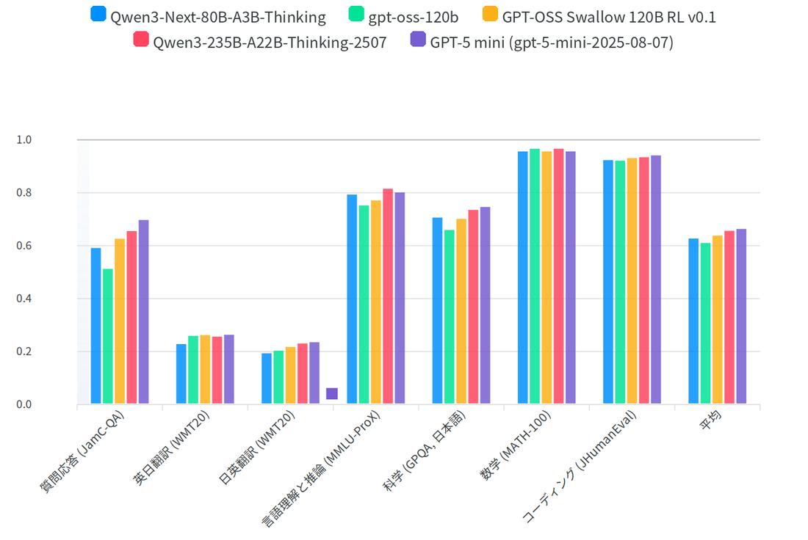
▲クリックすると拡大されます
{kind=link}
MoEの論理推論能力の向上 — ICLR 2026 Oral採択
本研究はICLR 2026にOral（口頭発表）として採択されました。経験的スケーリング法則は大規模言語モデル（LLM）の進化を牽引してきたが、モデルアーキテクチャやデータパイプラインが変更されるたびにその係数は変動する。最先端システムで標準となった専門家混合モデル（MoE）は、現在の高密度モデル研究が見落としている新たな疎性次元を導入する。本研究では、MoEのスパーシティが二つの異なる能力領域―記憶能力と推論能力―にどのように影響するかを調査する。固定された計算リソース予算下で、総パラメータ数、アクティブパラメータ数、トップkルーティングを変化させたMoEファミリーを訓練し、事前学習損失と下流タスク精度を分離して分析した。結果から二つの原則が明らかになった。第一に「有効FLOPs」：同一の学習損失でも有効計算量が多いモデルほど推論精度が高い。第二に「パラメータ当たり総トークン数（TPP）」：記憶課題はパラメータ数増加で改善するが、推論課題は最適TPPで効果を発揮し、推論がデータ集約的であることを示唆する。強化学習によるポストトレーニング（GRPO）も、テスト時計算量の増加も、これらの傾向を変えない。したがって我々は、最適MoEスパース性はアクティブFLOPsとTPPによって共同決定されなければならないと主張し、計算量最適スケーリングの古典的観念を修正する。モデルチェックポイント、コード、ログはhttps://github.com/rioyokotalab/optimal-sparsityでオープンソース化されている。
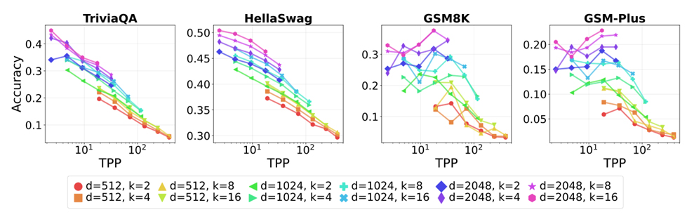
▲クリックすると拡大されます
{kind=link}
PowerCLIP: 冪集合アラインメントによる細粒度な対照事前学習 (CVPR 2026)
CLIPをはじめとする対照学習に基づく視覚言語事前学習は、様々な視覚言語タスクで優れたゼロショット性能を示している。近年、個々のテキストトークンを特定の画像パッチや領域と対応付けることで細粒度の構成的理解が向上することが示されてきたが、複数の画像領域にまたがる構成的な意味を捉えることは依然として困難である。本研究では、画像領域の冪集合（powerset）とテキストの構文木の間で定義される損失を最小化することで、領域とフレーズの対応付けを網羅的に最適化する新しい対照事前学習フレームワークPowerCLIPを提案する。素朴な冪集合の構築は領域部分集合の組合せ爆発により指数的な計算コストを要するため、領域数Mに対して計算量をO(2^M)からO(M)に削減しつつ、厳密な損失値を任意の精度で近似できる効率的な非線形アグリゲータ（NLA）を導入する。広範な実験により、PowerCLIPはゼロショット分類・検索タスクにおいて最先端手法を上回る性能を示し、その構成性と頑健性が確認された。本研究はIEEE/CVF Conference on Computer Vision and Pattern Recognition (CVPR) 2026に採択されており、コードはGitHubで公開されている。
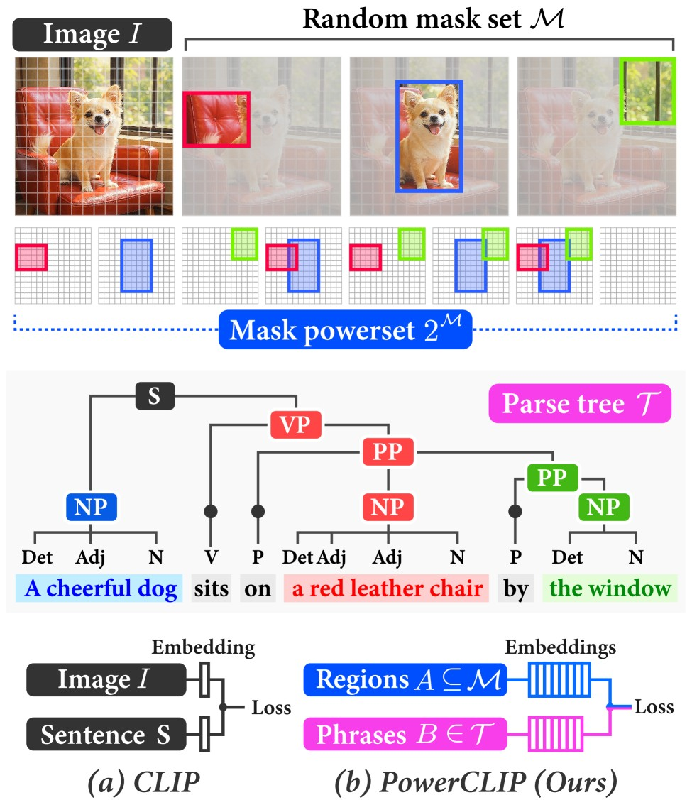
▲クリックすると拡大されます
{kind=link}
Masked Gated Linear Unit
ゲート線形ユニット（GLU）は、最先端の大規模言語モデル（LLM）のフィードフォワードネットワークにおいて不可欠な構成要素となっています。しかし、ゲートストリームと値ストリームに別々の重み行列を使用するため、ゲートのないフィードフォワード層と比較して2倍のメモリ読み取りが必要になります。このボトルネックを解決するため、効率的なカーネル実装を備えた新しいGLUファミリーであるマスクゲート線形ユニット（MGLU）を導入します。 MGLUの中核となる貢献には、(1)複数のバイナリマスクを学習する要素ごとのゲーティングの混合（MoEG）アーキテクチャ、各マスクが単一の共有重み行列上の要素レベルでゲートまたは値の割り当てを決定することでメモリ転送を削減するアーキテクチャ、(2)ハードウェアフレンドリーなカーネルであるFlashMGLUが含まれます。FlashMGLUは、単純なPyTorch MGLUと比較して推論時間が最大19.7倍高速化され、RTX5090 GPUでアーキテクチャが複雑になったにもかかわらず、標準的なGLUと比較してメモリ効率が47％高く、34％高速です。LLM実験では、Swish活性化バリアントSwiMGLUは、メモリの利点を維持しながら、SwiGLUベースラインのダウンストリーム精度に匹敵、あるいは上回っています。
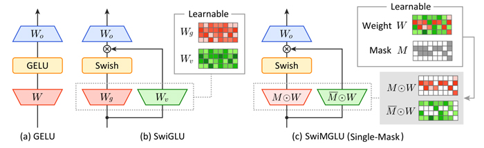
▲クリックすると拡大されます
{kind=link}
2025年度 学位論文研究 修士論文
固定計算予算下での高性能Mixture-of-Experts言語モデルの設計と学習（中村 泰士）
大規模言語モデル（LLM）の近年の発展は、モデル規模・データ量・計算コストを関係づけるスケーリング則によって牽引されてきた。モデルのパラメータ数を増やせば一般に性能は向上するが、そのようなスケーリングには膨大な計算資源が必要となる。Mixture-of-Experts（MoE）アーキテクチャは、入力ごとに一部のエキスパートのみを活性化することで効率的なスケーリングを実現する有望な解決策として注目されている。しかし、MoEモデルであっても学習には依然として大きな計算コストがかかり、固定された計算予算の下で性能を最大化する手法は十分に研究されていない。本論文では、効率的な初期化とアーキテクチャの最適化という二つの相補的なアプローチにより、計算効率の高いMoE言語モデルの設計と学習の方法を検討する。第一に、事前学習済みの密なモデルを活用してMoEの学習を加速しつつ長期的な収束性を維持する新しい学習手法Drop-Upcyclingを提案する。密なモデルのフィードフォワード層を単純に複製する素朴なUpcyclingとは異なり、Drop-Upcyclingは元の重みの統計情報を用いてエキスパートのパラメータの一部を選択的に再初期化する。大規模な実験により、アクティブパラメータ数5.9BのMoEモデルが、学習FLOPsを4分の1に抑えながら13Bの密なモデルに匹敵する性能を達成することを示した。第二に、計算最適な構成を明らかにするため、MoEモデルのアーキテクチャ上の疎性について系統的な調査を行う。その結果、疎性を高めれば性能が単調に向上するわけではなく、タスクの種類に応じて最適な疎性の比率が存在することが明らかになった。推論タスクではアクティブFLOPsとパラメータあたりトークン数（TPP）のバランスが重要であり、記憶タスクはより高い疎性から恩恵を受ける。これらの結果は、限られた計算資源の下で高性能な疎な言語モデルを学習するための実践的な指針を与えるものである。
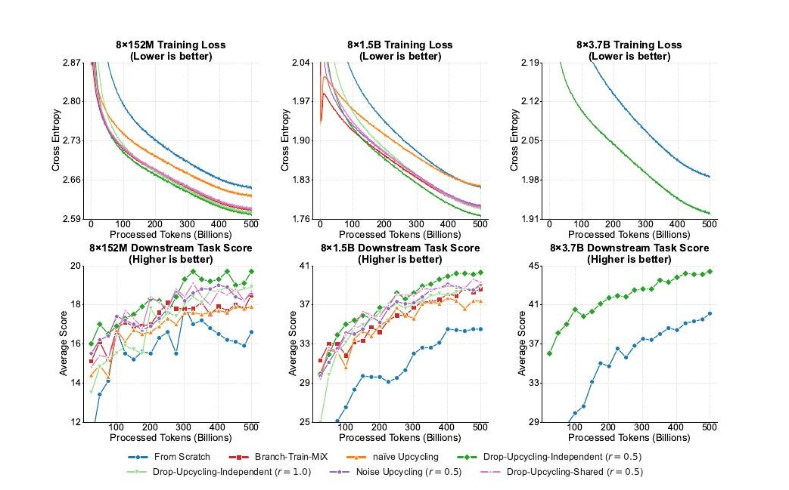
▲クリックすると拡大されます
{kind=link}
長い文章に対応した大規模言語モデルの開発（岡本 拓己）
近年、大規模言語モデルの性能が飛躍的に向上し、長い本や会話履歴を利用して回答を生成することのできる長い文章に対応した大規模言語モデルの開発が進められてきているが、さまざまな問題があることがわかってきている。学習・推論時の必要メモリ増加、学習速度・推論速度の低下、アテンション層における注意先が増え、注意が散漫になることによる性能の低下、長文対応のモデルを学習する際に使用される学習用データの不足などである。特に学習用データ不足に対する試みとして、先行研究では短文から長文を構築する手法が提案されている。この手法では、短文に対してチャンク分けと並び替えを行うことで、擬似的な長距離依存関係を持った長文が構築されており、このデータを使用した学習を行うことで長文性能が向上することが確認されている。しかし、依存関係にある二つのトークン間の情報のやり取りを明示的に高める手法は検討されておらず、擬似的な長距離依存関係を学習したことによって長文性能が伸びていることが明確に確かめられているわけではない。本論文では、擬似的な長距離依存関係を持った長文データで学習する際に、同一文書由来のトークンに対する注意を推奨するような目的を持つ新しい損失関数を加えて明示的に擬似的な長距離依存関係を学習することで長文性能が向上するのかを確かめる。実験結果を HELMET と RULER というベンチマークで評価した結果、損失関数を加えなかった場合と比較して、それぞれの平均値の合計が最大で 2.63point (3.16%) 向上するという結果が得られた。この結果から、擬似的な長距離依存関係を学習することは長文性能の向上に有用であることがわかった。また、新しい損失関数の応用先として Sparse Attention への適用を考え、実験を行ったが、それぞれの平均値の合計が最大で 0.82point 向上するにとどまり、実用化に向けてはさらなる改善が必要である。
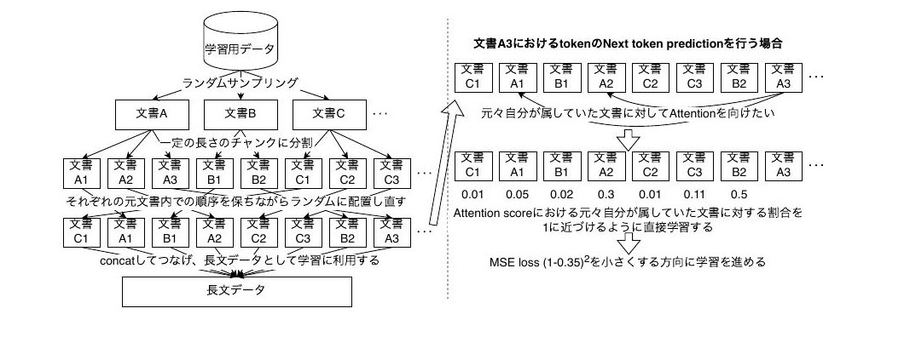
▲クリックすると拡大されます
{kind=link}
医療データを用いた大規模言語モデルの効率的な事前学習（Zhiyi Huang）
ChatGPTの登場以降、大規模言語モデル（LLM）は多くの分野で人工知能の最前線を切り拓いており、医療のような高リスク領域への応用も進みつつある。しかし、現在広く使われているモデルの多くは米国や中国で開発されており、医療環境や医療機器が大きく異なる日本では、日本固有の医療プロトコル、専門機器、規制の枠組みに関する知識が不足している可能性がある。さらに、クローズドソースのモデルや学習データが非公開のモデルを臨床現場で利用することには、アルゴリズムのバイアスの監査やデータプライバシーの保証ができないという大きなリスクがある。本研究では、日本の医療分野での利用により適したオープンなLLMの開発を目指し、日本語に強い既存モデルに対して、完全な透明性をもって人手で構築したコーパスによる継続事前学習を行うことで、医療知識と日本の医療環境への理解を深める。多数のパラメータを持つLLMを効率的に学習するため、AWSクラスタ上に3D並列化を構築し、スケーラブルな学習とファインチューニングを実現した。継続事前学習によって得られたモデル（アクティブパラメータ数22BのMoEモデルmed-llm-8×13Bおよびmed-llm-13B）は、日本の医師国家試験を含むベンチマークで良好な精度を示し、8×13B MoEモデルは構築の詳細が非公開の70B級オープンウェイトモデルに匹敵する性能を達成した。また、本研究は日本の医療分野において、コーパスの詳細を完全に公開して一から開発を行った初めての事例であり、地域の特性に合わせた医療LLMを構築する今後の取り組みに重要な知見を提供するものである。
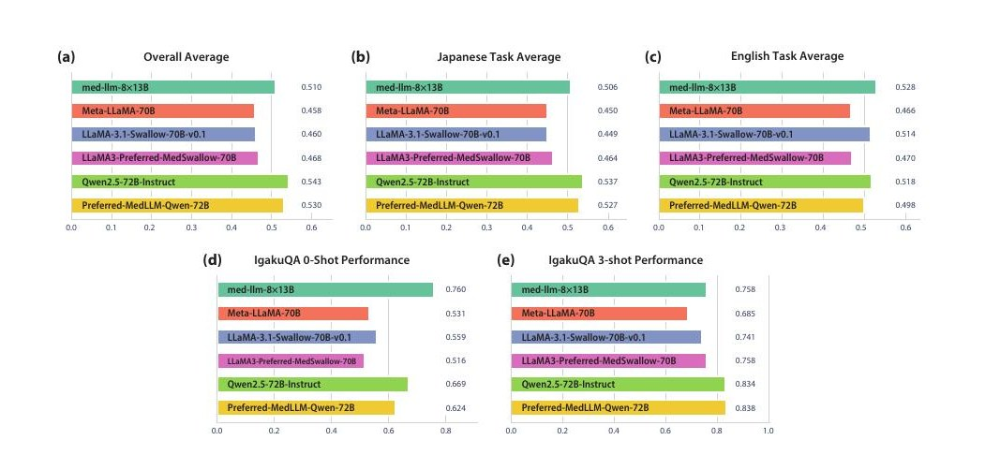
▲クリックすると拡大されます
{kind=link}
Biot–Savartカーネルに対する高速多重極展開法におけるM2L変換のTensor Coreによる高速化（齋藤 智和）
本論文は、渦糸法・渦粒子法などの渦度場シミュレーションで支配的となる Biot–Savart 則の N 体計算を高速化するため、カーネル独立型高速多重極法（KIFMM）の中核演算 M2L（Multipole-to-Local）変換を GPU の Tensor Core で加速する手法を提案・実装・評価したものである。直接法は O(N²) の計算量を要するが、FMM／KIFMM は空間を階層分割し、近傍は直接計算、遠方は展開係数間の線形変換としてまとめて評価することで、理論的に O(N) 近い計算量を実現する。一方で実行時間は段階演算の定数係数に左右され、特に同階層セル間の遠方相互作用を担う M2L が主要ボトルネックになりやすい。KIFMM の M2L は相対位置ごとに固定形状の密行列として表せる点に着目し、セル対を相対位置パターンごとに集約して行列–行列積（GEMM）に再構成し、Tensor Core が得意とする混合精度行列演算で高スループットに実行する。性能評価では RTX 4090／CUDA 12.8 環境で、粒子数増加に対して計算時間が概ね O(N) で伸びること、級数次数 P の増加で相対誤差が指数的に減少し P=5 で 10⁻⁴ 程度の要求精度を満たすこと、Tensor Core により M2L 部分が大幅に短縮されること等を示した。さらに CPU（Xeon Gold 5418Y, 24 コア）との比較では、GPU（Tensor Core 非使用）でも大規模領域では CPU より高速である一方、粒子数が小さいと並列度不足や PCIe 転送が効くことを確認した。加えて、複数 GPU による分散並列では、粒子を順に回す Shift Bodies と、比較的少量の部分木のみを交換する Local Essential Tree（LET）を比較し、LET が良好なスケーリングを示すことを実測した。
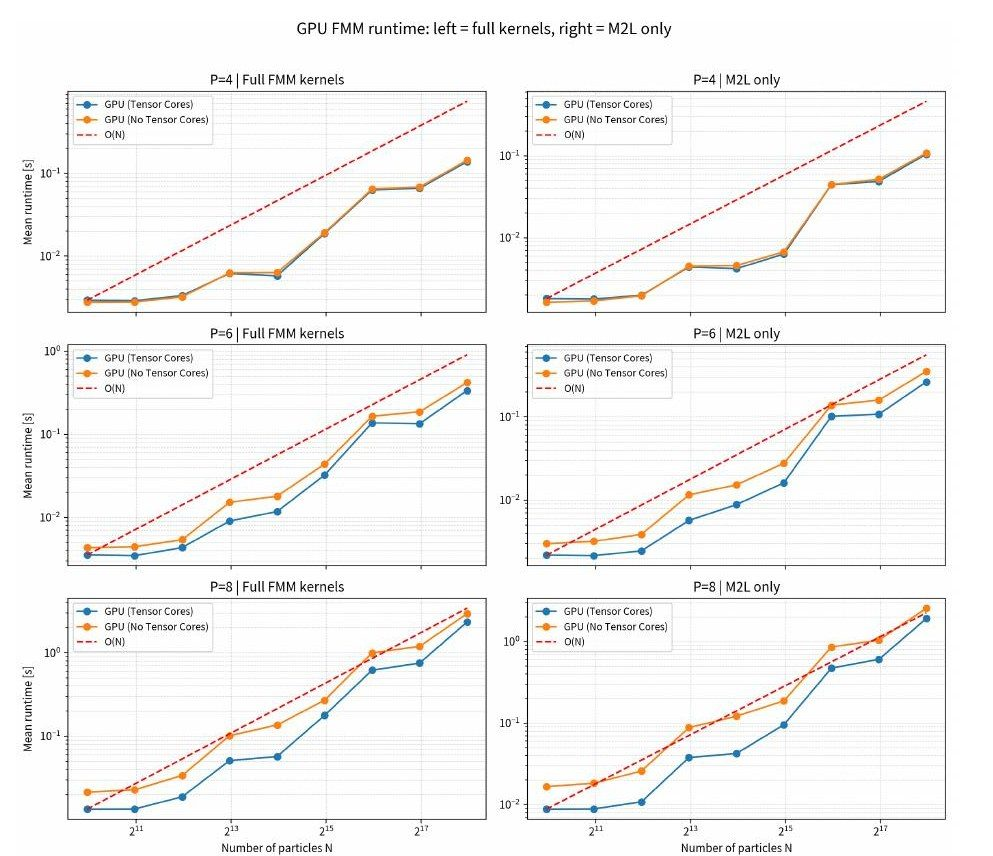
▲クリックすると拡大されます
{kind=link}
2025年度 学位論文研究 学士論文
大規模言語モデルの強化学習による効率的な論理推論（野原 大輔）
大規模言語モデル（LLM）は自然言語処理分野において飛躍的な進歩を遂げており、数学的問題解決やコード生成など高度な推論能力が求められるタスクへの応用が期待されている。LLM の推論能力向上において、検証可能な報酬に基づく強化学習（RLVR）とグループ相対方策最適化（GRPO）の組み合わせが注目されているが、RLVR と GRPO で訓練されたモデルは推論過程が冗長になりやすく、出力が長大化する傾向が報告されている。本研究では、GRPO の目的関数における loss aggregation の方式に着目し、出力長を短縮する手法を提案する。方式の違いが各トークンへの重み付けとして解釈できることに着目し、提案手法では、正解応答に対して出力長の逆数に基づく重みを適用し短い正解をより強く強化する一方、不正解応答に対してはすべてのトークンを均等に扱う。これにより、長さペナルティを報酬に導入することなく、目的関数の設計のみで出力長の制御を試みた。Qwen3-1.7B-Base および DeepSeek-R1-Distill-Qwen-1.5B を用いた数学的推論タスクでの実験の結果、既存の loss aggregation 方式では出力長が増加し続けるのに対し、提案手法では出力長の増加傾向が緩和されることを確認した。Qwen3-1.7B-Base では出力長が長いほど正解率が高くなる傾向が観察され、推論能力の獲得過程において長さペナルティが能力獲得を妨げることが示唆された。一方、DeepSeek-R1-Distill-Qwen-1.5B では中程度の出力長で最も高い正解率を達成し、提案手法は出力長を短縮しつつ比較手法と同等の性能を示した。
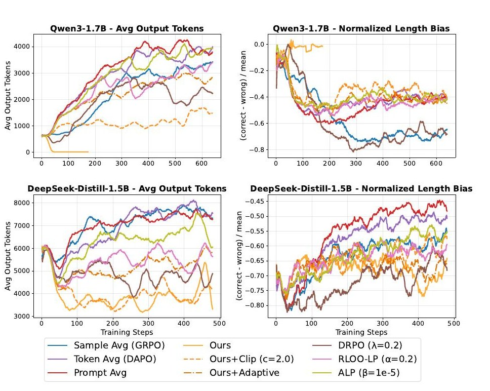
▲クリックすると拡大されます
{kind=link}
視覚・言語モデルにおける日本語OCR性能の向上（安田 俊吾）
近年、ディープラーニングの発展に伴い、視覚・言語モデル（Vision Language Model, VLM）は急速な発展を遂げている。VLM が対象とするタスクの一つである光学文字認識（OCR）において、日本語 OCR 性能を向上させるためには、日本語で記述された文書画像を大量に用意することが不可欠である。しかし、公開されている日本語文書データセットはアノテーションに要するコストや著作権や機密性を含む倫理的制約などの理由から十分に整備されておらず、その数は限られている。本研究では、日本語文書に特有のレイアウト構造を考慮し、テキスト情報から文書画像をレンダリングする手法を確立することで、この課題に対する有効な解決策を提示した。さらに、ノイズ付加を施すことにより、実文書のスキャン画像に近い視覚的特徴を再現し、認識性能の安定性向上を目的とした検討を行った。また、日本語 OCR において特に大きな課題である低解像度条件下での漢字認識に着目し、OCR が困難であると判断された文字領域のみを対象として超解像処理を行い、超解像後の画像を VLM に追加入力として与えることで、OCR 性能の向上を確認した。本研究の成果は、特定の言語で記述された大規模データセットが十分に存在しない状況においても、提案手法を用いることで、VLM を用いた OCR 性能の一定の向上が期待できることを示している。
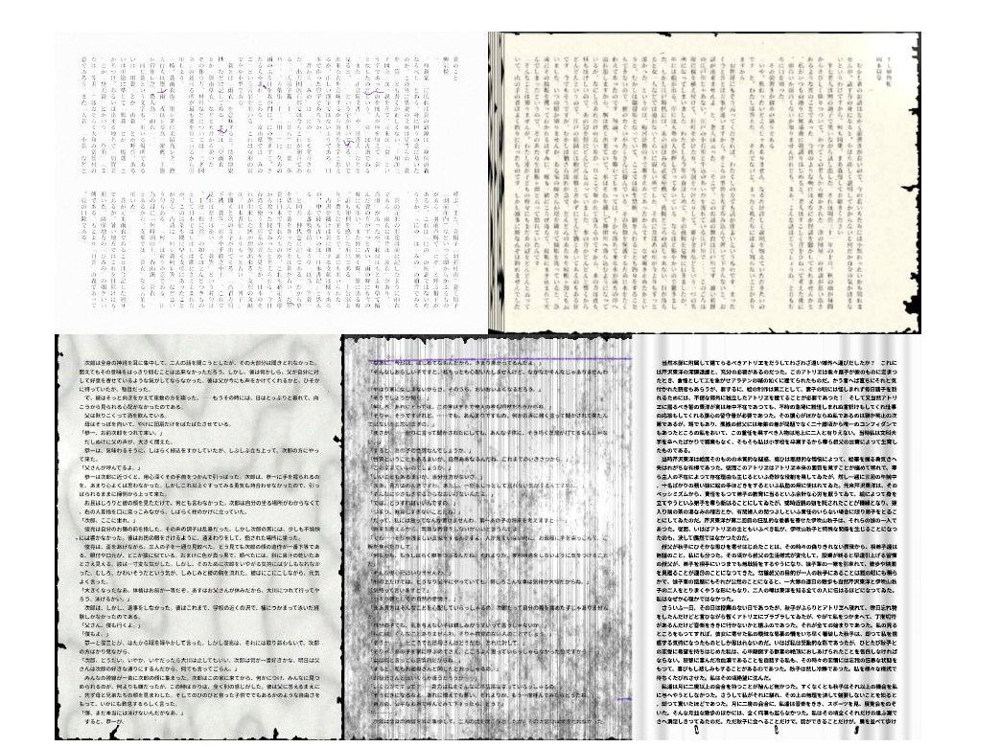
▲クリックすると拡大されます
{kind=link}
2024年度 学位論文研究 修士論文
人工画像データを用いた視覚-言語モデルの事前学習（井口悠司）
近年，ディープラーニング技術の高度化に伴い，画像とテキストを同時に扱う視覚-言語モデルが多様なタスクで顕著な成果を上げている．しかし，大規模な実画像データセットを用いる場合，著作権やプライバシー，倫理的な問題が常に懸念される．また，インターネット上から収集されるデータには不適切な内容やバイアスが含まれる場合があり，モデルの推論結果や公平性に悪影響を及ぼすリスクがある．そこで本研究では，3D シミュレーションを用いて作成した人工画像データと自動生成したキャプションを用い，視覚-言語モデルとして注目されるCLIP を学習させるアプローチを提案した．具体的には，Unity 上で動作するシミュレーションプラットフォーム(TDW) において，多様なシーンのオブジェクト配置やカメラ位置，オブジェクトのマテリアルなどを制御し，人工的に大量の画像を生成したうえで，その際のパラメータ情報をルールベースでテキスト化してキャプションを作成した．こうして得られた人工データセットを用いて，CLIP の事前学習を行った結果，モデルのファインチューニングや線形分類タスクでは一定の学習効果が確認されたものの，ゼロショット推論能力獲得には至らなかった．すなわち，現状の人工データセットのみで幅広い推論力を身につけることは難しいが，特定のタスクに対しては学習効果を発揮できた．さらに，本研究では，実データセットを用いた学習時に，キャプションの長さや画像中のオブジェクト数，背景の有無などを制御し，各要素がモデルの性能に与える影響を体系的に分析した．実験の結果，各ダウンストリームタスクにおけるモデル性能はタスクの特性やデータの設計次第で大きく変化することが判明した．特に，名詞だけのキャプションや単純化された背景など，データ作成コストを抑える方策が，必ずしも学習性能を大きく損なわない点は興味深い．本研究の成果は，視覚-言語モデルの学習におけるデータ設計に関する貴重な知見を与えるとともに，著作権・プライバシーの観点から問題を抱える実画像の代替あるいは補完策として，3D シミュレーションを用いて作成する人工データセットの有用性を示すものである．今後は，より多様なオブジェクトを導入したシミュレーションの設計や，人工データと少量の実データセットを統合した学習方策の考案などによって，高度なゼロショット性能と幅広いタスクへの適応力を兼ね備えた，安全な視覚-言語モデルの実現が期待される．
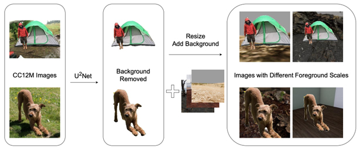
▲クリックすると拡大されます
{kind=link}
無限幅極限で有効な二次最適化と局所損失最適化の安定なパラメタリゼーション（石川 智貴）
二次最適化は深層ニューラルネットワークの学習を加速するために発展してきており、ますます大規模なモデルに適用されつつある。本研究では、さらなる大規模化を見据え、ネットワークの幅が大きく増加しても安定して特徴学習が進む、二次最適化のための特定のパラメタリゼーションを明らかにする。Maximal Update Parametrization（µP）に着想を得て、勾配の1ステップ更新を考察し、ランダム初期化・学習率・ダンピング項を含むハイパーパラメータの適切なスケールを明らかにした。本アプローチはK-FACとShampooという代表的な二次最適化アルゴリズムを対象としており、提案するパラメタリゼーションが特徴学習においてより高い汎化性能を達成することを示す。特に、幅の異なるモデル間でハイパーパラメータを転移できるようになる。
次に、層ごとの局所的なターゲットと損失によってネットワークを学習する局所学習を検討した。局所学習は誤差逆伝播法（BP）の代替として神経計算の分野で研究されてきたが、その局所性ゆえにアルゴリズムが複雑になったり追加のハイパーパラメータが必要になったりするため、アルゴリズムが安定して進行する望ましい設定を特定することが難しい。理論的・定量的な知見を得るため、予測符号化（PC）とターゲット伝播（TP）という代表的な二つの局所ターゲット設計に対して、無限幅極限におけるµPを導入した。µPにより幅の異なるモデル間でのハイパーパラメータ転移が可能であることを確認した。さらに、従来のBPには見られないµPの興味深い性質を明らかにした。深層線形ネットワークの解析により、PCの勾配はパラメタリゼーションに応じて一次勾配とガウス・ニュートン型勾配の間を補間することを見出し、標準的な設定では無限幅極限のPCは一次勾配に近い振る舞いをすることを示した。TPについては、古典的なµPとは異なる最終層の標準的なスケーリングであっても、その局所損失最適化はカーネル領域よりも特徴学習領域を好むことが分かった。
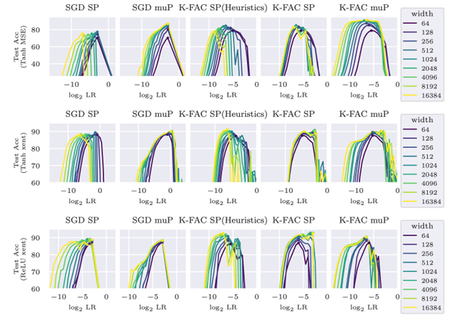
▲クリックすると拡大されます
{kind=link}
Tensor Coreを用いた対称ランクk更新の高速化（趙 潤初）
一般・対称・三角の密行列に対する行列積やランクk更新を含むBLAS3ライブラリは、線形代数における計算量の最適化において重要な役割を果たしている。行列の構造を活用することで演算回数を大幅に削減できるため、BLAS3は科学技術計算や機械学習などの高性能計算に不可欠である。しかし、Tensor Coreを備えた現代のGPUアーキテクチャの急速な発展は、既存のアルゴリズムに新たな課題をもたらしている。これらのハードウェアは低精度の行列積（GEMM）に最適化されているが、従来のアルゴリズムはそのようなハードウェア上では十分な性能を発揮できないことが多い。こうした制約に対処するため、本研究では行列の対称性・三角性を活用しつつ、データ局所性・演算強度・並列性を高める再帰に基づく新しいBLAS3アルゴリズム群を提案する。提案したTensorBLASライブラリの性能をNVIDIAのcuBLASライブラリと様々な精度で比較評価した結果、A100 GPUではFP16とFP32でそれぞれ最大2.48倍・2.36倍、RTX 4090 GPUではFP64で最大5.72倍の高速化を達成した。さらに、FP64 Tensor Coreを活用することで、TensorBLASはcuBLASに対して約1.5倍の高速化を示した。これらの結果は、現代のGPUにおける線形代数計算の大幅な性能向上の可能性を示すとともに、機械学習や大規模科学シミュレーションをはじめとする高性能計算のさらなる発展への道を拓くものである。
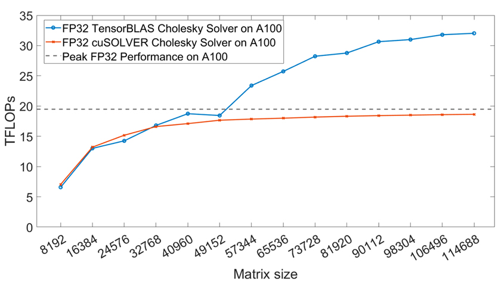
▲クリックすると拡大されます
{kind=link}
2024年度 学位論文研究 学士論文
語順変更に対応したCLIP モデルの学習（川村政貴）
CLIP（Contrastive Language-Image Pretraining）は、画像とテキスト間のマルチモーダル学習において高い性能を示しており、VLM (Vision Language Model) の基盤としても利用されている。しかし、言語表現の柔軟性や構成的推論能力に課題があることがこれまで多くの研究で指摘されてきた。これらの課題は、CLIP の応用範囲を広げる上で克服すべき最も重要な問題の一つであり、実際に検索システムや画像生成、視覚質問応答（VQA）などの応用シナリオにおいて大きな影響を及ぼしている。このため、CLIP の言語理解能力を向上させる研究は現在も盛んに進められている。本研究では特に、CLIP がキャプション内の語順変更に対して過剰に敏感である、という新たな課題に焦点を当てた。具体的には、語順は異なるが意味が同一であるキャプションに対し、CLIP が異なる認識結果を出力するという問題である。この問題は、言語的柔軟性や構成的推論能力の欠如に起因しており、CLIP の応用範囲において特定の課題を引き起こす。例えば検索システムでは、ユーザーが異なる語順や言い回しで同じ意味を持つクエリを入力した場合、CLIP がそれらを正しく理解できず、期待された検索結果を一貫して提供できない可能性がある。本研究では、この未解決の課題を体系的に明らかにし、この課題に対する解決策として、学習データにおけるキャプションの多様性を拡張する新しい手法を提案した。具体的には、キャプションの意味を保ちながら語順を入れ替える操作や言い換えを導入し、CLIP モデルを学習することで、語順変更に対するロバスト性を向上させるアプローチを実現した。成果として、CLIP における構成的推論能力の課題に新たな視点を提供するとともに、言語表現の柔軟性を向上させるための具体的な指針を示し、CLIP の応用可能性を広げマルチモーダル学習の分野の更なる発展に寄与した。
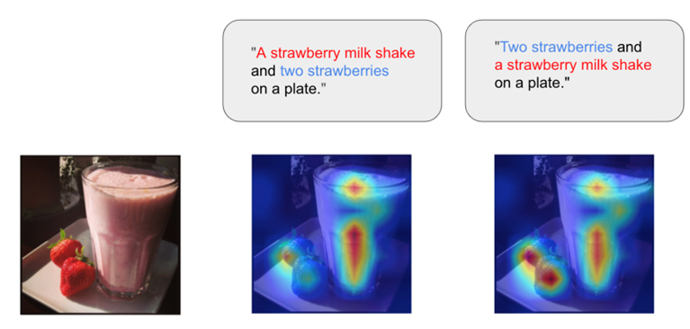
▲クリックすると拡大されます
{kind=link}
大規模言語モデルに基づく音声言語モデルの構築（田島 幸人）
近年の大規模言語モデル（LLM）は複雑な言語タスクにおいて卓越した能力を示しているが、音声言語モデリングへの応用はいまだ発展途上の分野である。本論文では、オープンソースの日本語・英語データセットを活用した日本語音声言語モデルの構築について検討する。エンコーダやデコーダの凍結など様々な学習戦略が、音声認識タスクにおける日本語の文字誤り率（CER）と英語の単語誤り率（WER）に与える影響を系統的に調査した。提案する音声言語モデルは、エンコーダにWhisper large v3、言語デコーダにLlama 3.2 Swallow 1Bを用いて構築されている。実験の結果、エンコーダを凍結しデコーダを学習する戦略が最も効果的であることが明らかになった。このアプローチは、エンコーダの頑健な事前学習表現を活用しつつ、デコーダをタスク固有の要件に適応させるものである。特に、JSUTでCER 7.25、Common Voice v8.0でCER 5.94を達成し、Whisperの精度に匹敵または上回る結果を得た。さらに、この構成は日本語と英語のタスクの双方で、1000億パラメータ級のはるかに大きなデコーダを持つ音声言語モデルに匹敵する競争力のある性能を発揮する。今後は、データセットの品質改善、音声データを用いた言語モデルの事前学習の統合、8B以上への大規模化などにより、さらなる汎化と性能の向上が期待される。
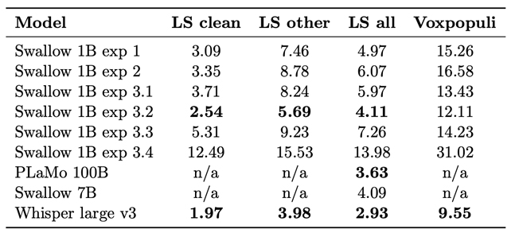
▲クリックすると拡大されます
{kind=link}
2023年度 学位論文研究 修士論文
大規模言語モデルのための計算効率の良い二次最適化手法の開発（Cong Bai）
近年、大規模言語モデル（LLM）は自然言語の理解と生成における優れた能力により、人工知能分野で大きな注目を集めている。しかし、巨大なモデルの学習には膨大な資源が必要であるため、その開発は巨大IT企業によって寡占されており、この分野の発展にとって大きな障壁となっている。ヘッセ行列、フィッシャー情報行列（FIM）、勾配の二次モーメント行列などの二次情報行列を活用する二次最適化手法は、収束を加速することで学習に必要な資源を削減できる可能性を秘めている。しかし、深層学習の規模ではこれらの二次情報行列は非現実的なほど大きくなる。K-FACやShampooといった代表的な二次最適化手法はこれらの行列を近似しているものの、言語モデルの学習では依然として大きなオーバーヘッドが生じるため、オーバーヘッドを許容するか、さらに粗い近似を行うかの妥協を迫られ、研究と応用の妨げとなっている。本研究は、この課題に取り組み、大規模言語モデルの学習のための効率的な二次最適化手法の開発を目指すものである。
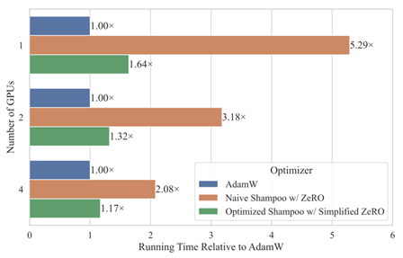
▲クリックすると拡大されます
{kind=link}
自然勾配主双対法を用いた分散連合学習 (石井 央)
連合学習では、データをそのデバイスやサーバーから集めることなく一つの機械学習を行うことができるため、機密性の高いデータでも学習を行うことができる。多くの場面では中 央集権型の連合学習が用いられるが、中央サーバーがないことによる単一障害点やボトルネックからの脱却という利点により、分散連合学習も近年注目を集めている。しかし、分散連合学習で用いられる最適化手法は主に損失勾配のみを用いる一次最適化手法であり、学習の収束までに多くの通信が必要となるという問題点がある。本研究では、深層ニューラルネットワーク(DNN)の分散連合学習における新しい最適化手法である自然勾配主双対法(Natural Gradient Primal Dual method, NGPD)を提唱する。
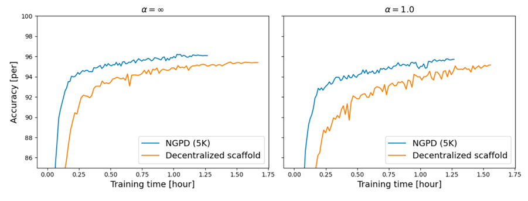
▲クリックすると拡大されます
{kind=link}
人工画像を用いた Vision Transformer の事前学習 (中村 祥大)
深層Visionモデルに対する事前学習データセットの大規模化が進むにつれ、著作権・プライバシー・倫理などの面において問題のある画像のデータセットへの混入を防ぐことが困難になっている。実際、2023年12月にはLAION.aiが、大規模画像-テキストデータセットであるLAION5Bの公開を、データセット内に不適切な画像が混入しているとして停止する事態が発生した。このような問題を根本から回避するアプローチとして、数式などを元に生成される実画像を用いない人工画像データセット事前学習の一部に用いるという手法がある。 人工画像はその事前学習データセットとしての質を、生成方法を変更することにより継続的に改善することができるが、そのような改善を行う既存の取り組みでは多くの人間の知識に基づいた試行錯誤が必要であり、多大な労力を伴う。 本研究では，「事前学習データセットの質」を予測する指標を設計・利用し、事前学習に効果的な人工画像データセットを自動構築することを試みた。
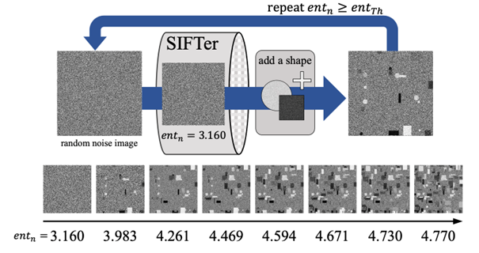
▲クリックすると拡大されます
{kind=link}
富岳上の大規模並列における Allreduce の高速化 (中村 秋海)
大規模深層学習モデルの学習では，データ並列学習によって高速化を行ったり、モデル並列学習によってモデルを分割したりするような並列学習手法を用いる。スーパーコンピュータ「富岳」上で深層学習モデルの訓練を行う場合、1 ノード当たりの性能では 他のGPUマシンに比べて劣るが、「富岳」の大規模なノード構成を利用し、大規模並列による訓練を行うことで速度向上を達成する方法がとられる。しかし、大規模並列による深層学習では、学習時間に占める通信時間の割合が増え、学習の速度向上の効率がよくないという欠点が存在する。本研究では、「富岳」上でAllReduceを高速化することを目的としている。深層学習モデルへの応用を考慮し、「富岳」の6次元トーラス直接網を3種類の並列手法で直交するように次元を3つ に分割し、それらの分割されたそれぞれで利用可能なAllReduceアルゴリズムを開発した。
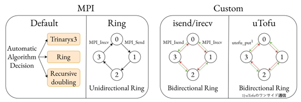
▲クリックすると拡大されます
{kind=link}
複数モデルの活用による拡散モデルの学習・サンプリングの高速化（王 兆卿）
近年、拡散確率モデル（拡散モデル、DPM）は画像生成モデルの隆盛をもたらした。しかし、拡散モデルは学習とサンプリングの効率の面で依然として課題を抱えている。サンプリングの高速化や学習戦略の改善に向けた様々な取り組みがなされてきたが、これらの改善は拡散モデルが単一モデルをバックボーンとすることの制約を受けている。本研究では、理論的基礎と既存の解析を詳細に検討した上で、拡散モデルの学習とサンプリングの効率を高める二つのアプローチを提案する。第一に、拡散モデルのバックボーンからデノイジングモデルとスコアモデルを分離し、一度の推論でそれぞれ固有の目標を用いて学習する。第二に、単一モデルのバックボーンを複数の個別モデルに展開し、分散して学習する方法を提案する。
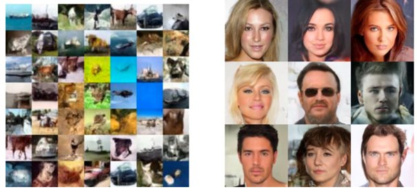
▲クリックすると拡大されます
{kind=link}
2023年度 学位論文研究 学士論文
大規模言語モデルの分散並列学習 (藤井 一喜)
近年、様々な研究機関や企業で大規模言語モデル (LLM) の開発が行われている。これらのモデルは、人間に近い言語理解能力と生成能力、様々な分野への適用可能性を示し、大きな注目を集めている。大規模言語モデルの効率的な学習には、分散並列学習が不可欠であり、学習効率に大きく影響する重要な要素である。しかしながら、論文やTechnical Report にはモデルの性能や、学習コーパス、モデルアーキテクチャに関する記述が主であることが多く、分散並列学習手法に関するノウハウは十分には共有されていない。また、最適な分散並列学習手法は、モデルサイズ、モデルアーキテクチャ、学習環境に大きく依存し、ある論文における設定がすべての場合において最適であることは稀である。本研究では、2.8B、7B、13B、70B、175B の複数のモデルサイズについてLLMの学習を行った。 また、スクラッチからの事前学習と学習済みのモデルからの継続事前学習の両方を行った。さらに、 Transformer アーキテクチャではない状態空間モデル (State Space Model) の学習も行った。
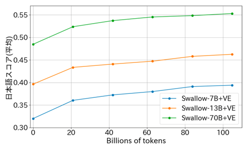
▲クリックすると拡大されます
{kind=link}
継続学習を用いたマルチリンガル・マルチエキスパートモデルの開発 (中村 泰士)
LLM は、タスクごとに特化したファインチューニングを行うことなく、大量のコーパスを事前学習をすることで、0-shot もしくは few-shot で自然言語処理の多くのタスクを解くことができる。非英語圏でも、自国の言語に対応する LLM の開発を進めることが増えている。効率的に複数の言語および複数のタスクに対応するモデルの開発は依然として課題が多く残されている。非英語話者 にとって、母国語でのプログラミング学習は重要な要求であるにもかかわらず、そのような言語でのコード生成をサポートするモデルはまれである。本研究では、主に英語とコードで学習されたモデル である、starcoderplusを基に日本語、英語、フィンランド語、ベトナム語、ヒンディー語、コードを用いて継続事前学習を行い、多言語に強いモデルを開発した。
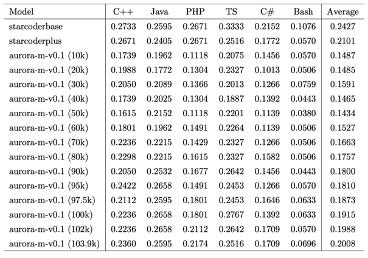
▲クリックすると拡大されます
{kind=link}
大規模言語モデルの構造探索（岡本 拓巳）
BERT は、2018 年に登場したモデルで、当時、11 個の NLP タスクにおいて、SOTA を達成したモデルである。しかし、BERTでは高い性能を達成するために大きなモデルサイズや大量の事前学習データセットを用いた事前学習が行われているため、学習に多大な時間を要する。この問題を解決するために、モデルに用いられているパラメータ数や各パラメータを表現する bit 数を削減することで性能を維持、または向上させつつモデルサイズを削減するモデル圧縮という手法の研究が行われている。モデル圧縮において提案されている手法には、枝刈り、量子化、蒸留、低ランク行列近似、Neural Architecture Search(NAS) がある。これらの手法のうち、NAS は視覚タスクのモデルに対しては色々な探索手法や探索空間が提案されているが、BERT や GPT に対する提案は少ない。そこで、本研究では、NAS を用いて BERT における最適な構造を探索して、モデルサイズを削減する実験を行った。
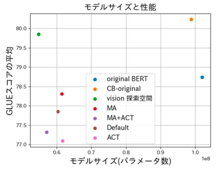
▲クリックすると拡大されます
{kind=link}
2022年度 学位論文研究 修士論文
人工画像による事前学習のスケールアップとその効果 (高島 空良)
画像認識タスクの文脈では、JFT-300M/3B のような超大規模な実画像データセットで事前 学習した ViT によって最高精度が更新されている。一方で、事前学習に用いられるラベル付き 実画像データセットは、倫理的・権利的問題や、収集・ラベリングの困難、一部組織による寡 占など、多くの問題を抱えており、データセット大規模化によってこれらの問題を制御することは難しくなっている。そこで本研究では、ViT を事前学習させる FDSL 用人工画像データセットについて、1) 画像 内オブジェクトの輪郭が重要、2) 画像表現のバリエーションが重要、3) スケールアップにより 事前学習効果の向上が可能、という 3 つの仮説を立て、それぞれの仮説を検証できる FDSL 用 データセット{ExFractalDB, RCDB, VisualAtom}を新規に構築し、各データセットがもたらす事前学習効果の比較検証を実施すると共に、FDSL 手法の事前学習効果の底上げを図った。
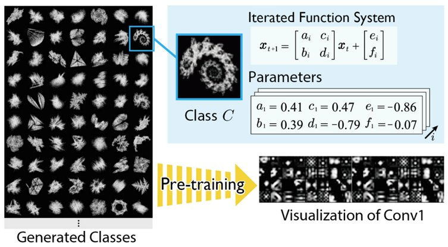
▲クリックすると拡大されます
{kind=link}
Vision TransformerのファインチューニングにおけるNASによるモデル削減効果（Xinyu Zhang）
自然言語処理で用いられるTransformerを画像に応用したVision Transformer（ViT）は、大規模データセットでの事前学習により、ImageNetの画像分類において従来の畳み込みニューラルネットワーク（CNN）を上回る性能を達成した。しかし、高い精度を得るためにモデルは巨大化しており、単一のGPUに載せることすら困難になり、推論時の有用性が制限されている。本研究では、このような大規模ViTモデルの性能を維持しつつサイズを削減するため、深層ニューラルネットワークのアーキテクチャを自動設計できるNeural Architecture Search（NAS）を活用する。LiuらのDARTSのアルゴリズムに基づいてMetaFormerのアーキテクチャを自動探索するAuto-MetaFormerという手法を提案する。この手法は、モデルの重みとともにアーキテクチャの重みを学習する勾配ベースのアプローチでアーキテクチャを探索する。Auto-MetaFormerはMetaFormerアーキテクチャの自動探索に成功し、同じパラメータ数で2%の精度向上を達成した。また、同じ分類精度であれば、人手で設計されたアーキテクチャと比較してパラメータ数をさらに20%削減できることを示した。
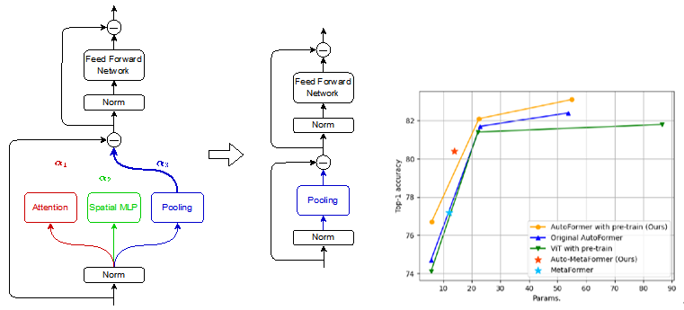
▲クリックすると拡大されます
{kind=link}
二次情報に基づくニューラルネットワークの枝刈り（Sixue Wang）
今日、深層学習はコンピュータビジョン、音声対話、自然言語処理など様々な分野の困難なタスクを解決する能力を実証しているが、コスト・効率・品質の観点では学術界と産業界の間に大きな隔たりがある。ニューラルネットワークの枝刈り（プルーニング）は、冗長なパラメータを選択して除去することでネットワークのサイズを削減する一般的な手法である。本論文の目的は、二次情報をニューラルネットワークの枝刈りに実用的な形で活用することである。二次情報を用いた枝刈りが、同程度の計算資源でより良い、あるいは同等の結果を達成できることを示す。
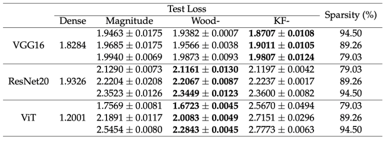
▲クリックすると拡大されます
{kind=link}
走行動画の大規模自己教師あり学習 (高橋 那弥)
自動運転において、カメラやライダーから得られた外界の環境の認識は安全を担保するための技術の 中核をなす。これらの認識精度は深層学習の登場により飛躍的に向上したが、完全自動運転を実現する ためにはまだ十分であるとは言えない。その原因の一つとして、自動車の走行データは膨大な数が収集可能である一方で、真値ラベルのアノテーションコストは高く、学習に要する教師データを十分に用意するのは難しいという課題がある。本研究では、画像ピクセル単位での自己教師あり学習を用いた走行動画の事前学習を行い、かつオプ ティカルフローを用いて物体の見えの時間変化に頑健な認識モデルを構築することを目指す。その事前学習効果の評価を行う下流タスクとしては CityScapes を用いたセマンティックセグメンテーションで の評価を行う。その結果、画像ピクセル単位で比較する際の近傍の定義によって、精度が大きく変化することがわかった。また、本来は正例ではないピクセルペアが正例と判定される擬正例をマスクによって除去することで、精度がさらに改善されることがわかった。
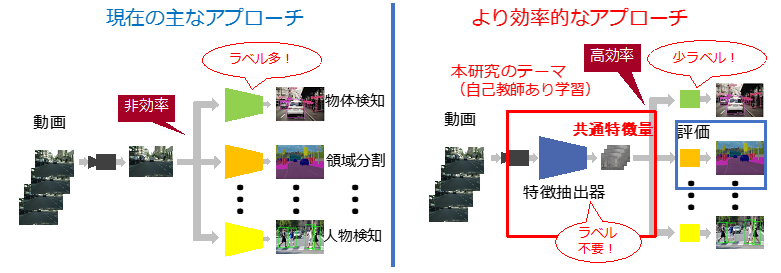
▲クリックすると拡大されます
{kind=link}
深層学習を用いた Visual SLAM による 変化検出 (大川 快)
自動運転や AR/MR、ロボティクスにおいて「目」の役割 を果たすのは、連続する画像列等の情報 からカメラの自己位置推定や周辺の 3 次元マップを復元する Visual SLAM であり、AI 社会における 最重要基盤技術の 1 つとなっている。近年、Visual SLAM の研究において自己位置と3次元マップを ロバストにリアルタイムで推定可能な手法が登場している。また近年進化が目覚ましい深層学習を取り入れた手法も提案されており、より高精度な自己位置推定と3次元マップの復元が可能となってき ている。しかし、3次元マップの作成から一定時間が経過すると実際のシーンが変化し、3次元マップとの間に齟齬が生まれる可能性がある。このような齟齬は Visual SLAM の精度を低下させ、古い情報の蓄積による 3 次元マップの肥大化を引き起こす。本研究では DROID-SLAM から得られる情報を用いて2時刻の 3 次元マップに対 して変化検出を行う手法を提案する。DROID-SLAM で推定された密な深度情報と回帰型ニューラル ネットワークで推定される Optical Flow を用いて変化マスクを推定する。また、新たに変化を考慮した目的関数を導入し、変化マスクの最適化を行った。さらに、本研究に適した合成画像データセットを 作成し、実験を行った。実験により、DROID-SLAM で推定された2時刻の 3 次元マップに対して変化 マスクの推定を行うことが可能であることを確認した。
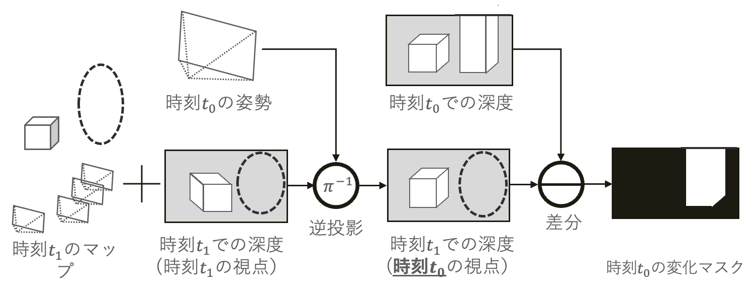
▲クリックすると拡大されます
{kind=link}
2022年度 学位論文研究 学士論文
深層学習の二次最適化における勾配の前処理に関する考察 (石川 智貴)
曲率行列 (ヘッセ行列, フィッシャー情報行列,2 次モーメント)による勾配の前処理は深層学習の幅広いタスクにおいて重要な技術となっている。深層学習の最適化を高速化する二次最適化を始め、継続学習、枝刈り、ベイズ推論など様々な領域において勾配の前処理が使われている。深層学習の二次最適化では曲率行列を近似した上で勾配の前処理を行う。その際の近似アルゴリズムとして 様々な種類のものが提案されているが、その特性の違いについてはほとんど調べられていない。そこで、本研究ではメモリ消費量や計算量などの計算的側面と学習の収束性の 2 つの観点からこれらのアルゴリズムを比較する。全体の学習時間は 1step あたりの計算時間と収束にかかるステップ数の積に よって決まるため、この2つの特性の両方を調べることがとても重要である。その結果、KFAC や Shampoo などの多くの二次最適化手法においては、ラージバッチサイズでの学習でとりわけ活躍す る可能性があることがわかった。また、SENG や SMW-NG などの逆行列計算に SMW 公式を利用する二次最適化手法は他の手法とは異なる性質を持つことが分かった。
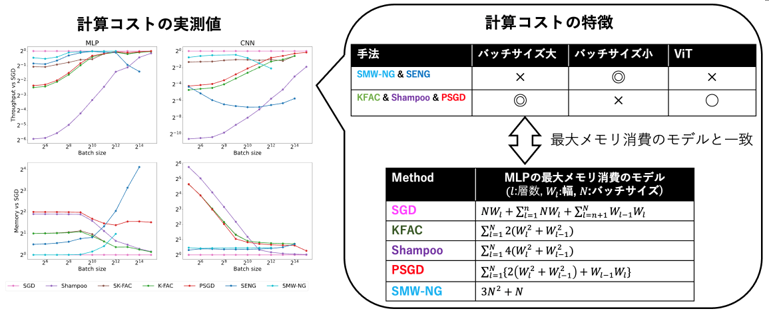
▲クリックすると拡大されます
{kind=link}
Newton Fractal を用いた Vision Transformer の事前学習 (近江 俊樹)
画像認識分野では、JFT-300M/3B などの大規模自然画像データセットを用いて事前学習を行った後に、目的のタスクのデータでファインチューニングする手法が主流になっている。事前学習に用 いるデータセットが大規模であるほど高い画像分類性能や物体認識性能が得られることが知られており、どのデータセットを事前学習に用いるかは重要な問題になっている。しかしながら、自然画像 データセットは、大量の画像の収集、ラベリングコスト、著作権の問題、内容の偏りの問題、公平性 や不快なラベルの問題など、多くの問題を抱えている。本研究では、ニュートン法により生成されるニュートンフラクタル画像で構成された画像データ セットを用いて Vision Transformer の Tiny モデルの事前学習を行い、CIFAR-10/100 のファイン チューニングタスクの精度によるデータセットの性能の評価を行った。さらに、従来手法のデータ セットである FractalDB、ExFractalDB と自然画像データセットの ImageNet でも同様の実験を行 うことで、従来手法との比較をした。結果として、ニュートンフラクタル画像のデータセットによる 事前学習効果が確認され、従来の FDSL データセットと同様に、カラー画像やグレースケール画像 よりも白黒画像により構成されたデータセットの性能が高く、画像の生成条件を変えることで性能が 向上することが分かった。ImageNet よりも事前学習効果は低い結果となったが、従来の FDSL 手法で用いられる画像表現に比べて高い事前学習効果が確認された。
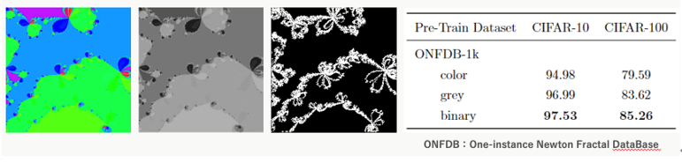
▲クリックすると拡大されます
{kind=link}
量子渦計算の高速多重極展開法を用いた高速化 (齋藤 智和)
極低温の流体は量子的な効果により粘性が 0 になる。そのような流体は超流体と呼ばれる。超流体の物理的な性質は工学的に重要であるが、応用のためには超流体の乱流化などの複雑な現象を解明する必要がある。しかし、超流体を実験する場合、流体を極低温に維持する必要があるため高額な設備が必要となる。そこで、シミュレーションによる解明が重要になるが、乱流のシミュレーションを行う場合、有限要素法などの格子を必要とする方法は格子を非常に細かくする必要があり、膨大な時間 がかかる。そこで、量子乱流は多数の渦糸からなる非粘性流体であり渦糸近似法を利用するのが有効である。本研究では、Biot-Savart の法則に基づく渦粒子間の相互作用を計算する FMM を CPU 上及び GPU 上で実装し、その計算速度と精度について評価を行った。FMM は近似アルゴリズムでありその精度は多重極展開の次数 P に依存するが、実装においても P の増加 とともに誤差が減少することを確認できた。さらに、FMM では周期境界条件を高速に計算可能であるが、粒子数が 104 個、FMM の次数が P = 10 の場合に周期鏡像が 274 個の付近で誤差が一定の値 に収束することが確認できた。
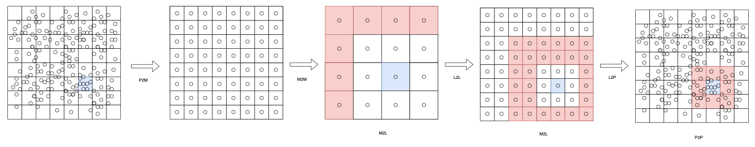
▲クリックすると拡大されます
{kind=link}
2021年度 学位論文研究 修士論文
確率的重み平均化法のラージバッチ問題及び分布外汎化への拡張 (所畑 貴大)
深層ニューラルネットワークモデルの実社会への適用への課題は，学習時間の増加や分布外のデータに対する汎化能力の低下など数多く存在する。学習時間の増加問題は，学習の高速化手法として複数の計算機を並列に用いて学習を行う分散並列深層学習が存在するが，汎化性能が低下する問題が経験的に知られている。本研究は，Stochastic Weight Averaging（SWA）に注目し，分散並列深層学習における汎化性能の低下問題と分布外のデータに対する汎化の改善を目的とする。SWAは，学習中に異なる局所解に収束した複数のモデルを得て平均化することで，一種のアンサンブル学習の近似を行う学習手法である。本研究ではSWAのハイパーパラメータへの依存性を網羅的に調査した。そして，SWAをを分散並列深層学習に適用し汎化性能を改善できることを示した。更に，分布外のデータに対する汎化タスクにおけるSWAの有効性を検証し，改善手法の提案を行なった。
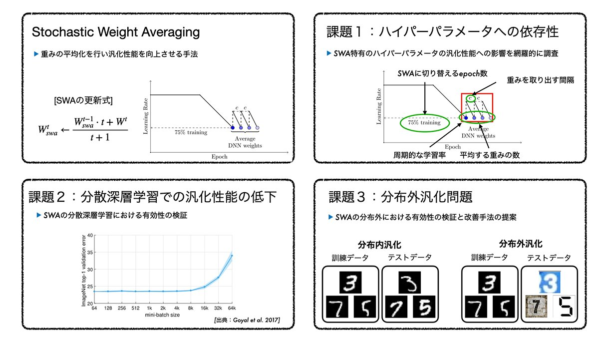
▲クリックすると拡大されます
{kind=link}
分布マッチングによるオフポリシー逆強化学習（星野 華）
逆強化学習（IRL）は、報酬設計が煩雑になりがちな場面で魅力的な手法である。しかし、従来のIRLアルゴリズムはオンポリシーの遷移を用いるため、安定した最適な性能を得るには現在の方策から大量のサンプリングを行う必要がある。これは、環境との相互作用のコストが非常に高くなり得る実世界でのIRLの応用を制限している。この問題に取り組むため、本研究ではオフポリシー逆強化学習（OPIRL）を提案する。OPIRLは、(1) オンポリシーではなくオフポリシーのデータ分布を採用することで環境との相互作用の回数を大幅に削減し、(2) ダイナミクスの変化に対して高い汎化能力を持つ転移可能な報酬関数を学習し、(3) モードカバーの振る舞いを活用して収束を高速化する。実験により、提案手法がはるかに高いサンプル効率を持ち、新規環境へ汎化することを示した。提案手法は、大幅に少ない相互作用回数で方策性能のベースラインと同等以上の結果を達成した。さらに、復元された報酬関数が、従来手法では失敗しやすい異なるタスクへも汎化することを実証的に示した。
{kind=link}
有益なサンプルを考慮したプロキシによる深層距離学習（Aoyu Li）
距離学習は機械学習の中核をなす基礎的なタスクの一つである。深層距離学習（DML）では、高い性能を維持しつつ柔軟性と効率性を備えたプロキシベースの手法が近年ますます注目されている。本研究では、クラスに依存した動的重み付けを組み合わせた新しいプロキシベース手法Informative Sample-Aware Proxy（Proxy-ISA）を提案する。表現空間におけるクラスの代表点であるプロキシは、サンプルの表現と同様に、プロキシとサンプルの類似度に基づいて更新される。既存手法では、大きな勾配を生む比較的少数のサンプル（ハードサンプル）と、小さな勾配を生む比較的多数のサンプル（イージーサンプル）が更新の大部分を占めてしまうことがある。そのような極端なサンプル集合への感度が高くなりすぎると汎化能力が損なわれるという仮定に基づき、提案するProxy-ISAは各サンプルへの勾配の重み係数を直接修正する。まず、クラスの難易度の情報を得るために、学習されたクラス関連領域を推定する方法を設計する。クラスの難易度に応じてハードサンプルとイージーサンプルを適応的に定義することで、各プロキシは自身のハード・イージーサンプルを識別し、スケジュールされた閾値関数によってそれらの重みを低減する。これにより、モデルは中間的なサンプル、すなわち「有益な（informative）」サンプルへの感度を高める。さらに、能動学習の考え方を取り入れて学習ステップに応じて有益なサンプルを動的に強調し、正例ペアと負例ペアに対して動的な重みを個別に割り当てる。CUB-200-2011、Cars-196、Stanford Online Products、In-shop Clothes Retrievalデータセットでの広範な実験により、Proxy-ISAが最先端手法を上回ることを実証した。
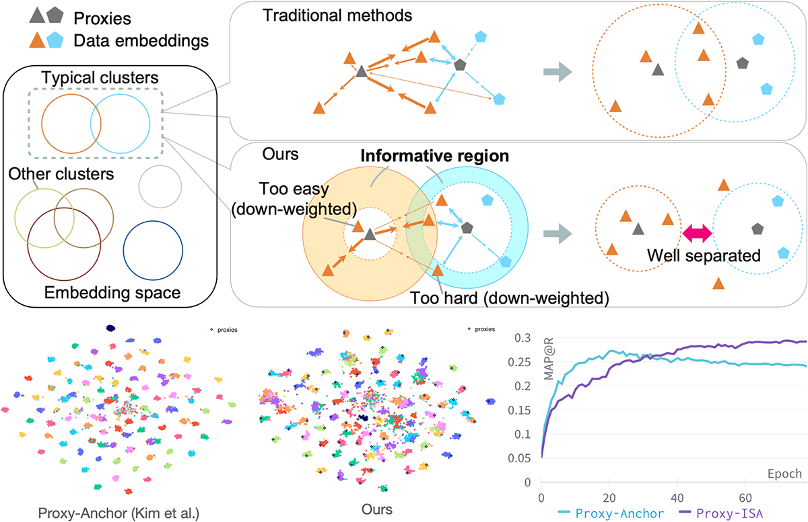
▲クリックすると拡大されます
{kind=link}
2021年度 学位論文研究 学士論文
深層学習における情報行列の固有値の高速解法 (石井 央)
深層学習においてフィッシャー情報行列とヘッセ行列は，損失関数の形状の把握やニューラルネットワークモデルの汎化性能の評価，最適化手法への適用といった場面で重要な役割を果たす．ただ，大規模なモデルではこれらの行列を計算することは困難であるため，固有値による評価が行われる．本研究では，データセットやネットワークのアーキテクチャを変えながら，正確なフィッシャー情報行列や高速近似計算で求めたフィッシャー情報行列の固有値密度をStochastic Lanczos Quadrature（SLQ）という手法を用いて近似計算し，正確な固有値から求めた固有値密度と比較した．また，SLQにおける反復回数を変えながら近似精度の関係を調べた．結果として，どのデータセットやアーキテクチャ，行列の近似手法においても，反復回数が5回あればSLQにより求まる固有値の範囲は実際の固有値の範囲とほぼ等しくなり，10回あればSLQにより求めた固有値密度の形は，正確な固有値から求めた固有値密度の形を反映していることが分かった．
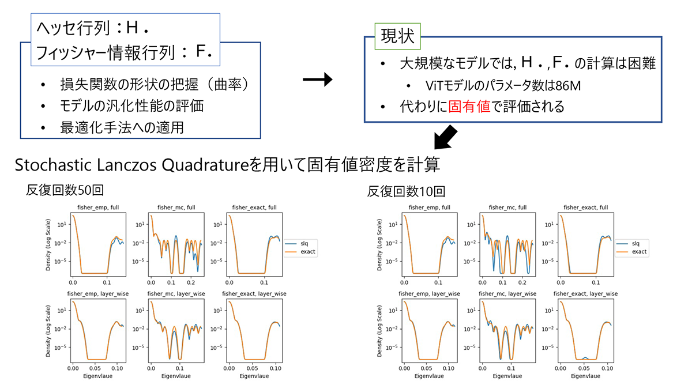
▲クリックすると拡大されます
{kind=link}
Vision Transformerにおけるバッチサイズの汎化性能への影響 (中村 秋海)
深層ニューラルネットワークを用いた深層学習は画像分類の様々なベンチマークにおいて，最も良い性能を達成している．画像分類において，事前学習で用いるデータセットは大規模なほどファインチューニング時の性能が良くなるため，膨大な学習時間が必要となる．深層学習は，ミニバッチを用いて勾配を計算し，最適化アルゴリズムを用いて損失関数を段階的に減少させる方法が存在する．バッチサイズを大きくすることで，同期データ並列学習を用いると，バッチサイズが大きいほどプロセス数を上昇させられ，プロセス数が大きいほど処理速度が上昇させられる点である．しかし，バッチサイズを大きくし過ぎると，汎化性能が低下するラージバッチ問題が生じ汎化性能が低下する．バッチサイズの汎化性能への影響の調査し，得られる汎化性能と計算速度を事前に把握することは，効率的なデータ並列学習を行うために必要不可欠である．画像分類における既存の研究では畳み込みに基づくニューラルネットワークにおけるバッチサイズの汎化性能への影響は調べられているが，注意機構に基づくVision Transformerは調べられていない．本論文では，Vision Transformer(ViT)におけるファインチューニング時のバッチサイズと汎化性能への影響を調査した．
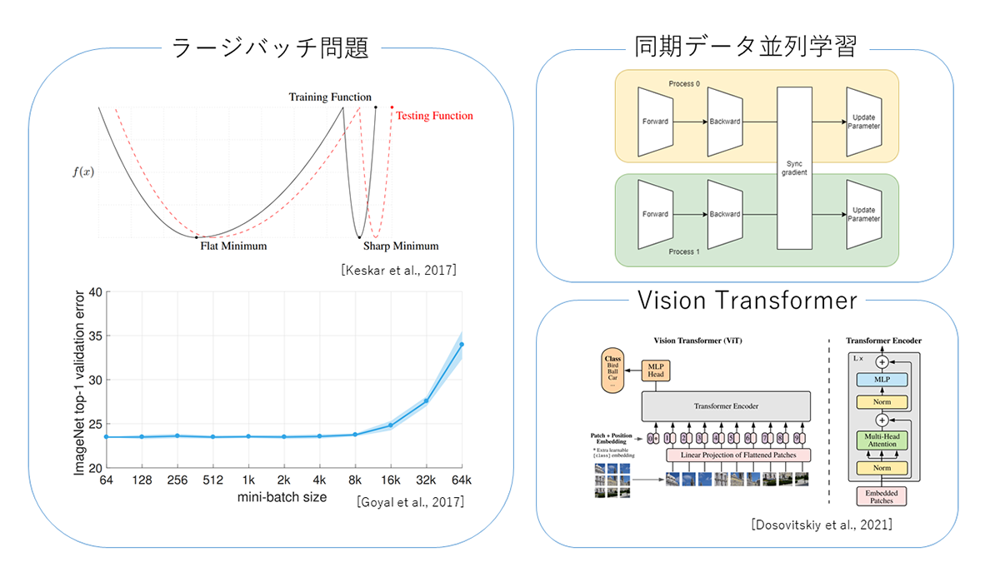
▲クリックすると拡大されます
{kind=link}
超大規模バッチサイズにおけるSAM最適化手法の汎化ギャップについて（Elvin Munoz）
学習されたネットワークの汎化性能は、モデルのパラメータにおける損失関数の幾何学的な形状と密接に関係しており、平坦な極小値がニューラルネットワークの汎化性能を高めることが知られている。SGDをはじめとする多くの最適化手法の確率性により、通常は鋭い極小値よりも平坦な極小値が見つかる。しかし、バッチサイズを大きくして学習過程の確率性を減らすと、鋭い極小値に陥りやすくなる。この影響に対処し、大きなバッチを用いても高い汎化性能を得るための手法が数多く考案されており、その一つがSAM（Sharpness-Aware Minimization）である。SAMは小〜中規模のバッチサイズで学習されたニューラルネットワークの汎化性能を改善することが示されており、分散学習でも有効であることが確認されている。しかし、より大きなバッチサイズにおける能力の詳細な調査が必要であり、さらにこの手法は調整を要する新たなハイパーパラメータ（近傍サイズ）を導入する。本研究の主な目的は、（ほぼフルバッチに達する）大きなバッチを用いた場合のこの最適化手法の振る舞いを明らかにし、適切な調整のために近傍サイズの挙動を調査することである。
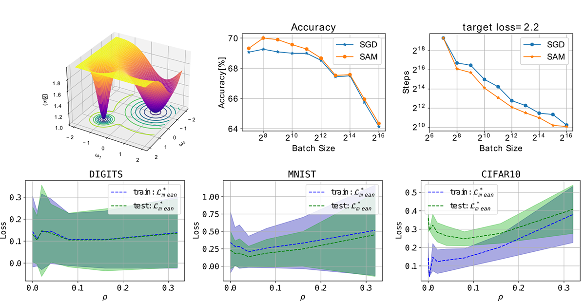
▲クリックすると拡大されます
{kind=link}
2020年度 学位論文研究 博士論文
大規模深層学習のための二次最適化（大沢 和樹）
深層ニューラルネットワークの大規模分散学習では、実効的なミニバッチサイズの増大により、汎化性能の劣化したモデルが得られてしまう。従来のアプローチは、エポックや層ごとに学習率やバッチサイズを変化させたり、バッチ正規化にアドホックな修正を加えたりすることでこの問題への対処を試みてきた。本研究では、一次最適化手法で学習したモデルと同等の汎化性能を達成しつつ収束を加速できる原理的なアプローチとして、スケーラブルで実用的な自然勾配法（SP-NGD）を提案する。さらに、SP-NGDは一次手法と比較して無視できる程度の計算オーバーヘッドで大きなミニバッチサイズにスケールする。高度に最適化された一次手法が参照として利用できるベンチマークタスク、すなわちImageNetデータセットでのResNet-50の画像分類学習でSP-NGDを評価した。1,024基のGPUを用いたミニバッチサイズ32,768で5.5分でtop-1検証精度75.4%への収束を実証し、さらに131,072という極めて大きなミニバッチサイズでもSP-NGDの873ステップで74.9%の精度を達成した。
{kind=link}
2020年度 学位論文研究 修士論文
分散深層学習の省メモリ・省I/O化と二次最適化の高速化（上野 裕一郎）
本研究は巨大なDNNを膨大なデータセットで学習する際の種々の問題（学習時間，メモリ使用量，I/O）の解決を目指す． まず，少ない反復数での収束が期待される二次最適化に現れる行列計算の高速化手法を提案し，情報行列を計算しつつ一次最適化と同程度かより速い時間での収束を実現する． さらに，複数ノードとメモリ階層性を用いたメモリ分散手法を提案して，1GPUのメモリに格納できない巨大なDNNの1GPUでの学習と，そうではないDNNについても高速化を実現する． 加えて，ローカルディスクに格納できない膨大なデータセットをランダムに抽出する際にI/Oコストの低いデータ読み込み手法を提案する．
Yuichiro Ueno, Kazuki Osawa, Yohei Tsuji, Akira Naruse, Rio Yokota, Rich Information is Affordable: A Systematic Performance Analysis of Second-order Optimization Using K-FAC, Proceedings of the 26th ACM SIGKDD International Conference on Knowledge Discovery & Data Mining, Aug. 2020.
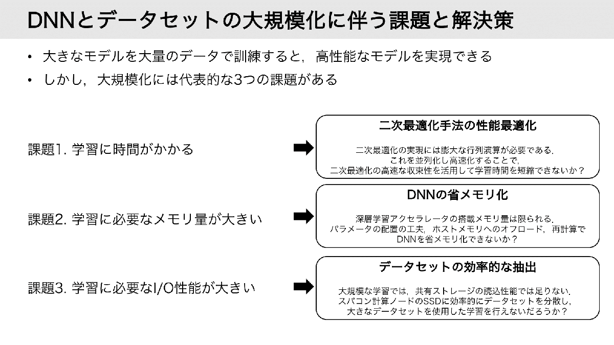
▲クリックすると拡大されます
{kind=link}
自己教師あり学習による画像分類のための継続的な事前学習（中田 光）
深層学習では新しく得られたデータでモデルを学習した場合，過去に学習したデータに対する精度が大幅に劣化してしまうことが知られている．この問題は致命的忘却と呼ばれ，継続学習ではこの致命的忘却を防ぐことを目指す．継続学習に関する近年の研究では，多くの場合，常に教師ラベル付きのサンプルが十分に与えられる問題を対象としている．しかし，実問題ではしばしばラベル無しデータや少量のサンプルのみラベル付けされたデータから学習することが求められ，このようなラベルが不足する条件を対象とした継続学習に関する研究は十分に行われていない．そこで本研究では，ラベル付きサンプルが無い場合や不足する場合でも大規模に学習可能な，対照学習による自己教師あり学習に着目し，継続的に自己教師あり学習を行なった場合の検証を行なった．致命的忘却を防ぐため，本研究では蒸留および部分的な過去のデータの再学習を導入し，それらの効果をImageNetを用いて大規模な問題設定で調査した．
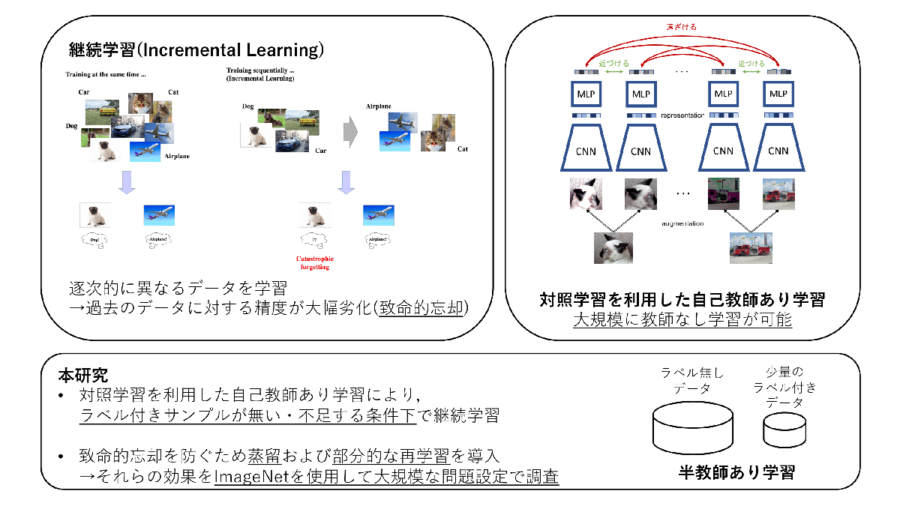
▲クリックすると拡大されます
{kind=link}
一貫性損失を利用した Zero-shot 文字認識器 の性能向上（郭 林昇）
文字種の多い言語における手書き文字認識は、文字種の多さに起因するデータセット収集の難しさが課題となっている。Bengali.AI Handwritten Grapheme Classification Challengeでは、この課題に対して、Zero-shotな推論を可能とする文字認識モデルの作成を求められた。本研究では、推論ラベル文字情報から生成したフォント画像を認識する教師あり学習モデルと手書き画像をフォント画像に変換するモデルを作成し、これら、二つを結合することで、Zero-shotな推論を可能にした。提案した手法は、従来手法で用いられていた文字構造の細分化を行いマルチラベリング化してZero-shotな推論を行う手法と比較して、推論精度を60.1%から84.4%に引き上げた。また、本手法の実装にあたり、文字構造の知識は不要であり、検証を行ったベンガル語以外の言語への転用を可能としている。本手法と通常のクラス分類モデルなどを組み合わせた推論パイプラインはKaggleのResearch Code Competitionにおいて、1位の成績を獲得した。
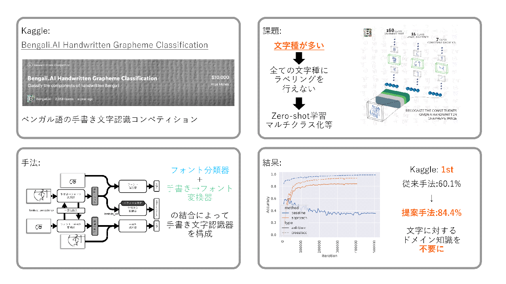
▲クリックすると拡大されます
{kind=link}
2020年度 学位論文研究 学士論文
大規模データセット・モデルを用いた深層学習における汎化性能向上手法の有効性について（伊藤 巧）
過学習は深層ニューラルネットワーク(DNN)の課題の一つであり、これを防ぐための正則化手法が提案されている。本研究では2020年にIshidaらによって提案された『Flooding』と呼ばれる、タスクに特化せず、多くの深層学習アルゴリズムに汎用的に導入可能な正則化手法に注目した。Floodingは既存の学習プログラムへの実装も非常に容易であることから今後より広い領域のタスクにおいて活用できることが期待されている。本研究ではIshidaらの実験にはなかった分散深層学習を用いた大規模な問題設定におけるFloodingの効果を検証した。具体的には大規模画像データセットImageNetの分類タスクにおける学習を行った。
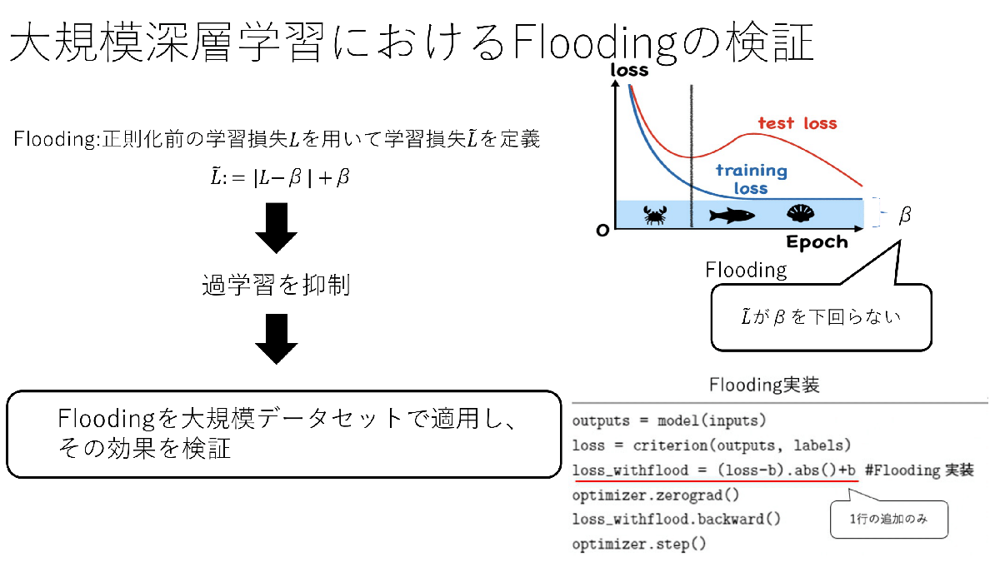
▲クリックすると拡大されます
{kind=link}
大規模な事前学習モデルにおけるラージバッチ問題の検証（Xinyu Zhang）
近年，大規模言語モデルの事前学習に多くの注目が集まっている．事前学習には膨大な計算時間を要するため，高速化が重要である．分散深層学習によるラージバッチ学習は，高速化を実現できるが，予測性能が劣化する問題（ラージバッチ問題）が知られている．本研究では，代表的な大規模言語モデルであるBERTの事前学習におけるラージバッチ問題の検証を行った．具体的には，事前学習中の損失の推移，及び言語理解タスクへのファインチューニング後の性能，の二点における変化を観察し評価を行った．
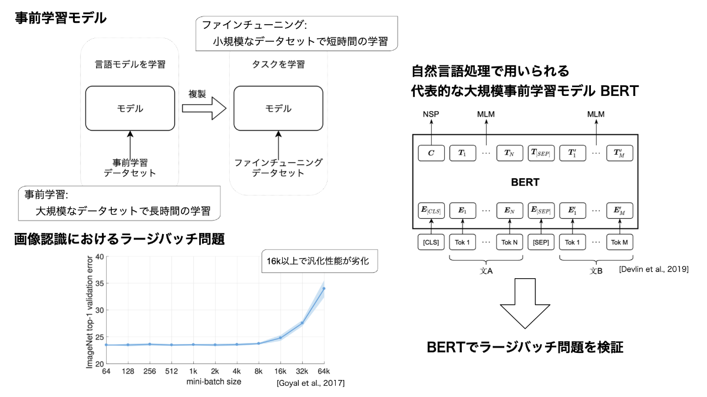
▲クリックすると拡大されます
{kind=link}
平坦な解を目指すミニマックス最適化の分散深層学習への応用とその効果（高島 空良）
深層学習の汎化の原理解明を目指した最近の研究では，学習で求まった解近傍における損失関数の曲率（loss sharpness）が汎化に相関がある有力な指標として挙げられている．loss sharpnessを明示的に抑制しflat-minimaを目指す学習アルゴリズムとしてSharpness-Aware Minimization（SAM）が提案された．SAMでは，ミニバッチを複数プロセスに分割して各プロセスが独立にミニマックス最適化を行うことで学習精度が更に向上することが，特定のミニバッチサイズにおいて報告されている．本研究では，分割数やミニバッチサイズを網羅的に変えて畳み込みニューラルネットワークの学習を行い，SAMによる汎化性能向上の効果を検証した．
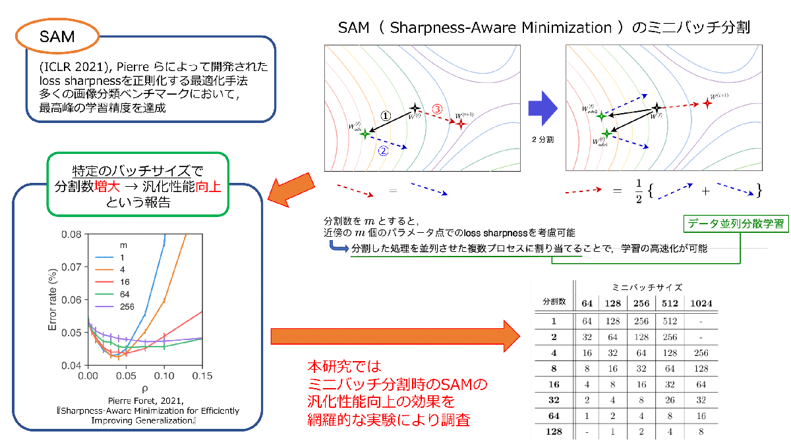
▲クリックすると拡大されます
{kind=link}
2019年度 学位論文研究 修士論文
Tensorコアを用いたRandomized SVDの実装と評価 (大友 広幸)
本研究ではTensorコアを用いた高速かつ省メモリなRandomized SVDを開発しその評価を行った．
はじめにTensorコアを用いるためのAPIの構造の解析を行い，高速かつ省メモリにTensorコアを用いるためのAPI拡張の開発を行った． つぎにこれを用いてTensorコアを用いたTSQRの開発を行い，その計算精度と計算性能の調査を行った． 実装したTSQRでは入力行列の列数に制限があるため，これを複数回用いることで任意の大きさのQR分解を行うBlockQRを実装しRandomized SVDへの適用を行った． BlockQRではNVIDIAが開発している既存実装と比較し最大99.8%のメモリ消費を削減でき，4倍以上の計算速度の向上が確認された． Randomized SVDではNVIDIAが開発している既存手法での実装に対し精度の劣化を抑えつつ省メモリかつ高速に計算可能であることが確認された．
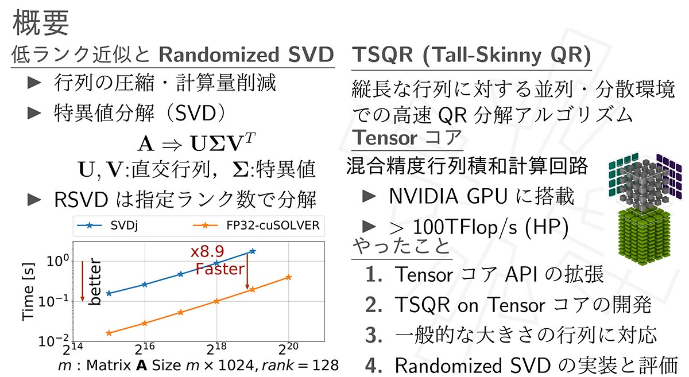
▲クリックすると拡大されます
{kind=link}
強化学習における好奇心駆動探索手法の高速なGPU 実装 (桑村 裕二)
強化学習は環境とエージェントの相互応答の繰り返しによって学習を行う機械学習の手法の一つだが、学習に膨大な時間がかかることが知られている。CuLEは代表的なプラットフォームであるAtari emulatorをGPU上で実行させることにより学習時間を大幅に削減させた。学習アルゴリズムにはV-trace Actor Criticが使われているが、Atariに対して高いスコアを実現させている統合型Q学習アルゴリズムRainbowとのスコアの統一的な比較は十分にされていない。そのため、本研究ではRainbow含め他の学習アルゴリズムとのスコア比較を行った。また、探索手法として高分散に適したコンパクトな設計であるRNDとの統合を行い、統合前後での学習スコアの差異を基に、探索手法の選定の必要性について考察を行った。
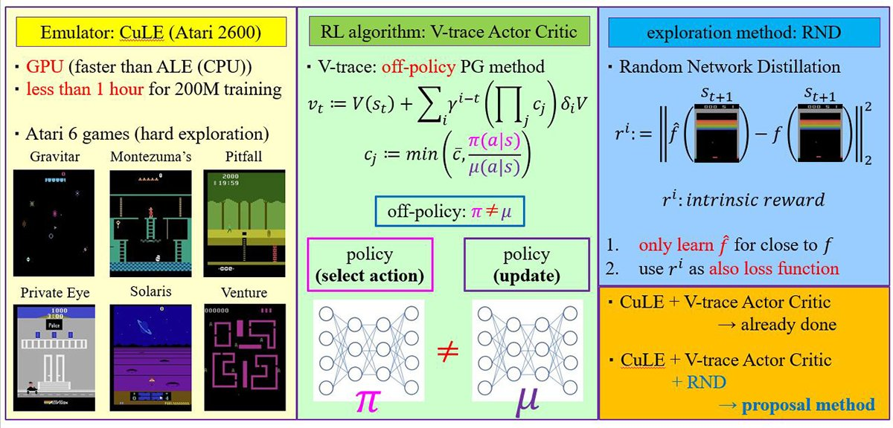
▲クリックすると拡大されます
{kind=link}
階層的低ランク近似のための効率的なライブラリ（Peter Spalthoff）
密行列はメモリ量がサイズの二乗に比例し、多くの演算は三乗に比例するため、大規模な計算では非常に高価になる。共分散行列や境界要素法（BEM）など多くの応用では、低ランクブロックの部分構造が現れる。この部分構造を活用することで、階層的低ランク近似と呼ばれる効率的な行列の圧縮が可能になる。得られる階層的行列（H行列）は線形の記憶量しか必要とせず、乗算や逆行列などのすべての算術演算を定義でき、これらの演算もほぼ線形の計算量で高速に実行できる。我々は、ヘテロジニアスなノード上での分散メモリ並列化を備えた、モダンで柔軟なライブラリを開発している。
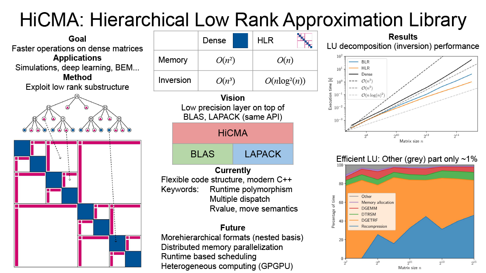
▲クリックすると拡大されます
{kind=link}
2019年度学位論文研究 学士論文
確率的重み付け平均法のラージバッチ学習における有用性の検証 (所畑 貴大)
学習によるラージバッチ学習では、バッチサイズの増加と共に汎化性能が劣化する問題が経験的に知られている。本研究では、この問題を解決するために確率的重み付け平均法（Stochastic Weight Averaging ; SWA）に着目した。SWAは学習中にモデルのパラメータを定期的に抽出しそれらを平均化する手法であり、汎化性能の劣化の原因と考えられているSharpな解への収束を防ぐ効果が期待できる。本研究ではSWAをラージバッチ学習に適用することで汎化性能の改善効果を検証した。また、SWAを利用した並列深層学習手法であるSWAP（Stochastic Weight Averaging in Parallel）にも着目し、SWAPとラージバッチ学習における標準的な最適化手法の一つであるLARS(Layer-wise Adaptive Rate Scaling)を組み合わせた手法を提案及びその汎化性能の改善効果を検証した。
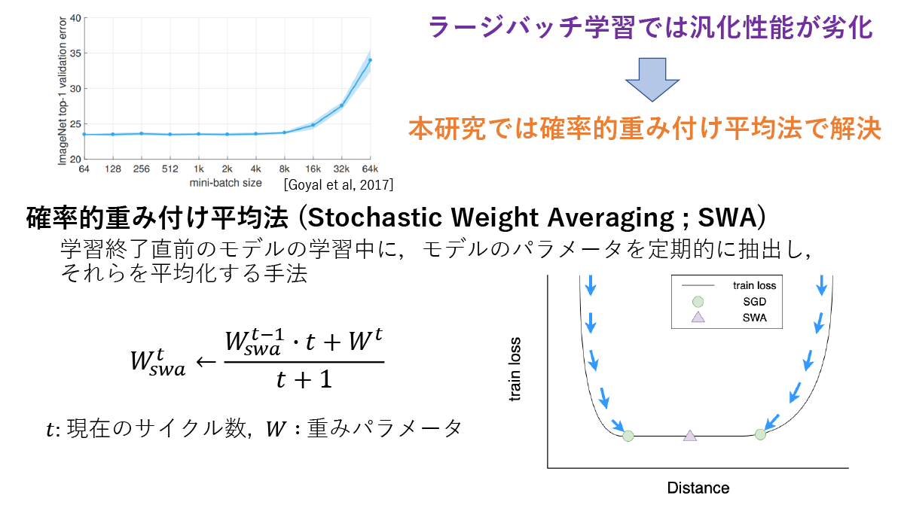
▲クリックすると拡大されます
{kind=link}
情報行列を用いた深層ニューラルネットワークの汎化誤差推定 (星野 華)
近年，理論的観点，そして経験的観点から多くの汎化指標が提案されている．本研究では情報行列を用いた深層ニューラルネットワーク（DNN)の汎化指標，広く使える情報量基準（WAIC）に着目した．WAICは2010年に提案された汎化指標であるが，これの計算に必要なDNNにおける事後分布の推定が計算量とメモリ量の観点から困難なため，今まで大規模なDNNに用いた報告が未だなされていない．一方，近年急速に発展を遂げた情報行列の高速な近似手法と効率的な近似ベイズ推論手法を組み合わせることで，これらの問題を解決し，WAICを近似的に評価する方法を提案した．この近似的に推定されたWAICと，同じく情報行列を用いた汎化指標であるEmpirical TICをケンドールの順位相関係数で評価することで大規模な設定における有効性を検証した．
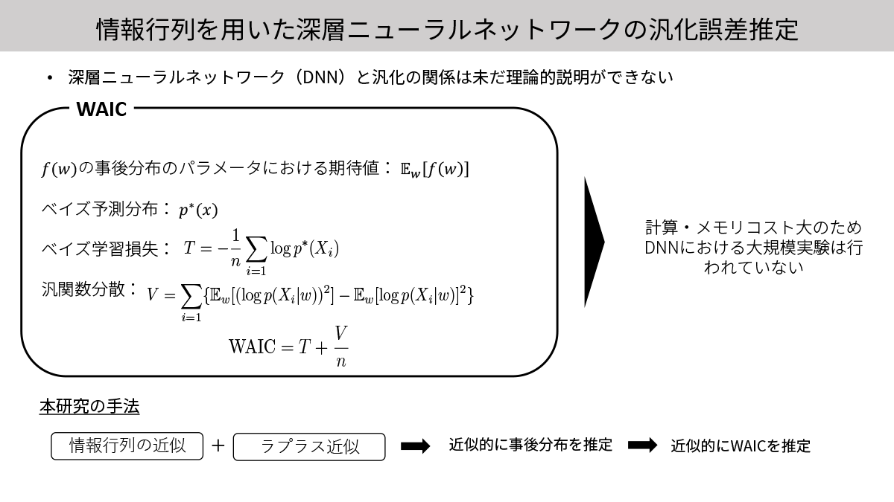
▲クリックすると拡大されます
{kind=link}
2018年度学位論文研究 修士論文
畳み込みニューラルネットワークにおける低精度演算を用いた高速化の検証 (長沼 大樹)
近年の畳み込みニューラルネットワーク（CNN）は、より深い多層構造を持つ傾向にある。これによりモデルの精度は向上するが、学習と推論に関わる計算量とデータ量が増大する。この問題を解決するため、CNNのノイズへの耐性を活用し、計算とデータの数値精度を下げることで、データ量と計算量を削減する手法がいくつか提案されている。しかし、CNNの各層におけるパラメータ圧縮と高速化の関係についての議論は不足している。本研究では、学習済みモデルに低精度化を適用し、CNNモデルのデータ削減に加えて、計算律速な層のデータアクセスを高速化することで、半精度浮動小数点SIMD命令を用いて推論を高速化する手法を提案する。提案手法を適用した際のCNNの認識精度への影響、各層の高速化とその要因について検証を行った。
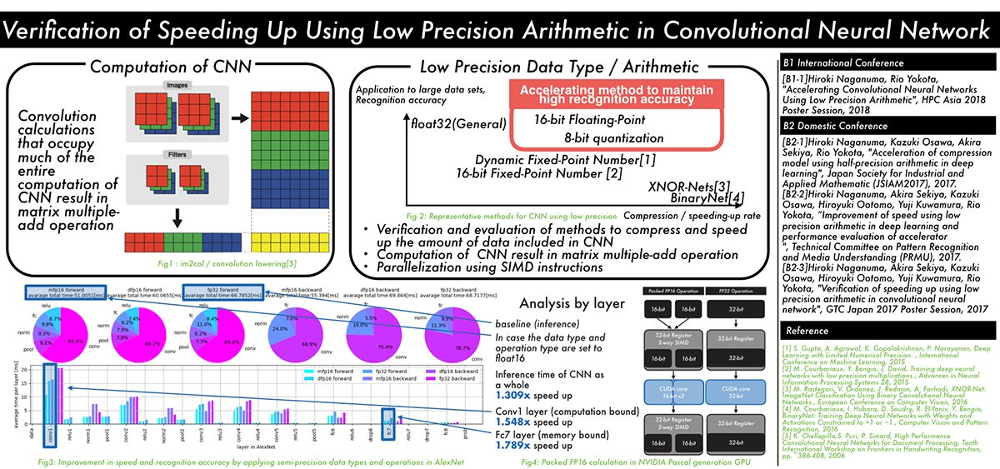
▲クリックすると拡大されます
{kind=link}
大規模並列深層学習のための確率的最適化に基づいた目的関数の平滑化 (長沼 大樹)
古典的な学習理論では、データに対してモデルのパラメータ数が大きすぎるとモデルは過学習し、汎化性能が劣化するとされている。しかし、深層ニューラルネットワーク（DNN）は、古典的な学習理論の予測を超えて、極めて大量のデータとモデルパラメータを用いた学習により高い汎化能力を達成できることが経験的に示されている。その一方で、DNNの学習には膨大な計算時間を要するため、大規模並列化による学習時間の短縮が必要となる。DNNの素朴なデータ並列化は収束と汎化を劣化させる。本研究では、大バッチ学習におけるこの汎化ギャップを解決するために二次最適化手法を用いる可能性を調査する。これは、大バッチ学習では各ミニバッチが統計的により安定するため、曲率を考慮することの効果がより重要な役割を果たすという我々の観察に基づいている。また、自然勾配法を素朴に適用すると、正則化能力の欠如により汎化性能がさらに劣化することも見出した。本研究では、損失関数を平滑化することで二次最適化手法がミニバッチSGDと同等に汎化できるようにする改良手法を提案する。
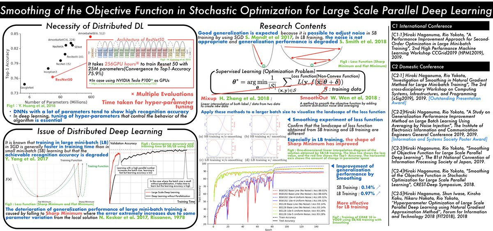
▲クリックすると拡大されます
{kind=link}
2018年度学位論文研究 学士論文
帯域幅最適なGPU間AllReduce通信の階層化 (上野 裕一郎)
本研究では，データ並列・同期型分散深層学習で，損失関数のパラメータによる勾配の平均値を求めるために用いられるAllReduceと呼ばれる集団通信アルゴリズムに着目した．この通信は，MPI(Message Passing Interface)の集団通信の仕様に含まれているが，分散深層学習で用いられる大きなメッセージサイズの通信は，従来のHPCアプリケーションで使用されてきた通信とは異なり，未だ研究が不十分である．既存研究として，階層化を用いることで通信を改善できることが知られているが，どのような階層化が最適かは十分に調べられていない．本研究では，産総研「ABCIグランドチャレンジ」プログラムにより提供を受けた，AI橋渡しクラウド（ABCI）の計算リソースを用いて，網羅的に階層化通信の性能を評価した．
Yuichiro Ueno and Rio Yokota, "Exhaustive Study of Hierarchical AllReduce Patterns for Large Messages Between GPUs", in IEEE/ACM International Symposium in Cluster, Cloud, and Grid Computing (CCGrid 2019).
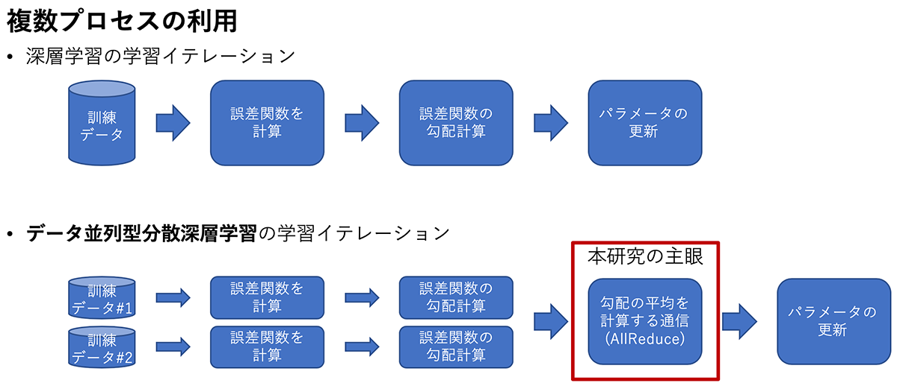
▲クリックすると拡大されます
{kind=link}
SiameseNetworkによる筆者識別 (郭 林昇)
本研究では2入力間の特徴量を学習するSiameseNetworkと呼ばれる深層学習モデルを用いて筆者識別タスクを行うモデルの生成を行なった。NISTデータセットから取り出した筆者ごとの手書き数字を用いてモデルの学習を行い、同じくNISTデータセットから作成したテストデータに対して筆者識別タスクが可能であるモデルの生成に成功した。精度の検証も行なったが、クラス数の少ない場合には高い精度での識別が行えていたが、クラス数が多くなると精度が下がる傾向があり、内部表現の分割等による正則化を行い精度向上を目指すことが今後の課題である。
{kind=link}
自然勾配法に基づくベイズ的深層学習に関する研究 (中田 光)
深層学習における変分事後分布に正規分布を仮定した変分推論では，変分事後分布の共分散行列の大きさがニューラルネットワークのパラメータ数に依存して大きくなるため，計算量やメモリ容量の観点からパラメータ間の相関を考慮した変分事後分布の推定は困難とされてきた．自然勾配法の効率的な近似手法であるK-FACを変分推論における最適化に用いたNoisy K-FACは，大規模なニューラルネットワークにおいても層ごとのパラメータの相関を考慮した変分事後分布の推定を可能とし，学習が汎化することが示されている.本研究ではNoisy K-FACに着目し，既存研究では明らかにされてこなかった、変分パラメータの探索にMCVIを適用した場合の検証を行なった．
{kind=link}